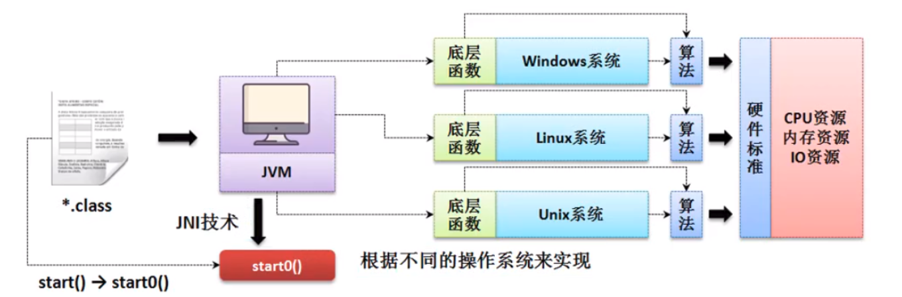
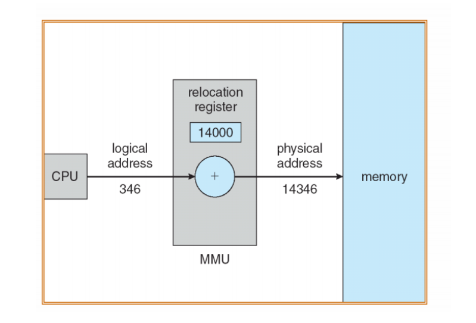
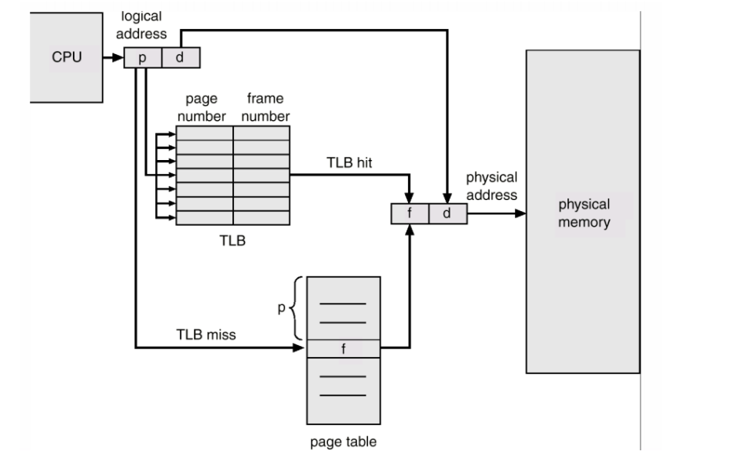
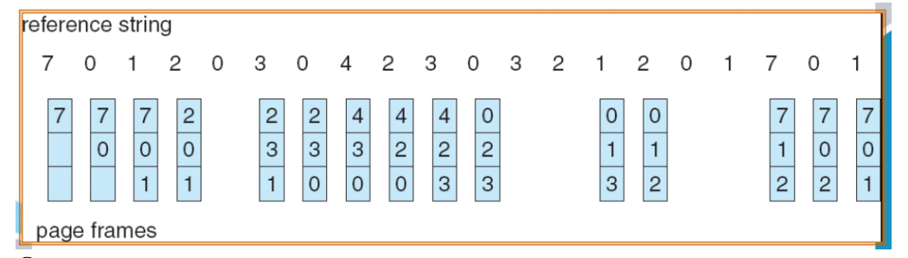
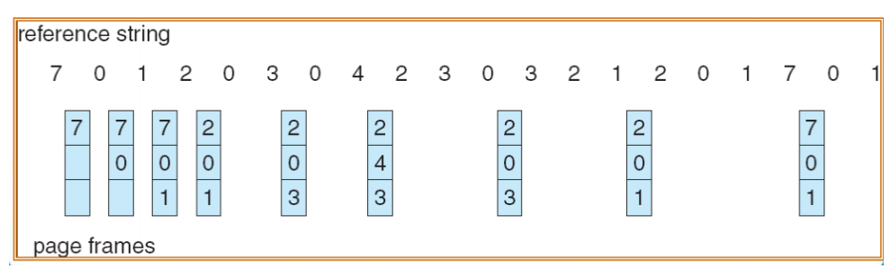
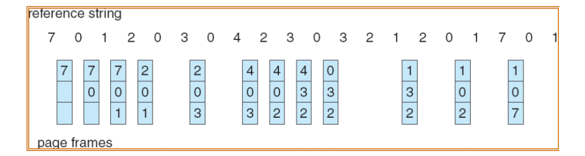
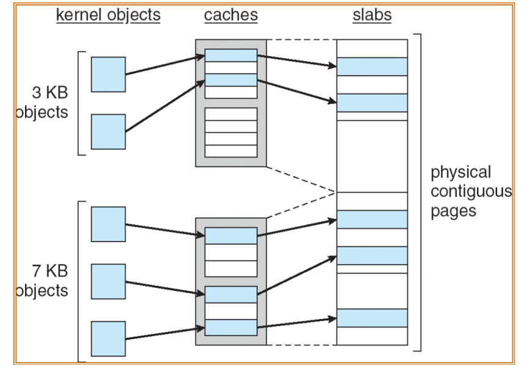
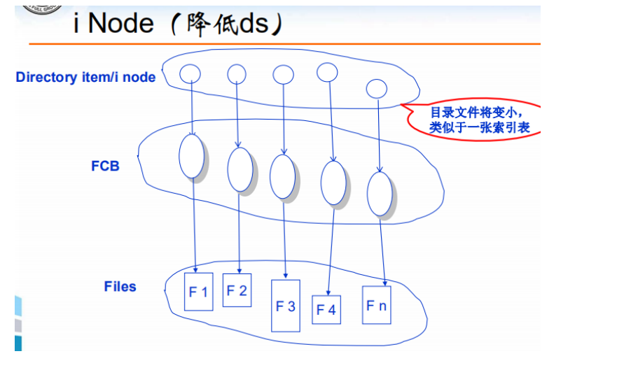

操作系统笔记
本文是我在学习操作系统过程中的总结与笔记。
操作系统基本知识
操作系统简介
操作系统是管理计算机硬件的程序，它为应用程序提供基础，并且充当计算机用户和计算机硬件的中介（可以看做是一种资源分配器）
它的具体定义为：
操作系统是一直运行在计算机上的程序（通常称为内核，kernel，常驻于内存）， 除了内核部分外，还有其他两类程序，分别是系统程序（与系统运行有关的程序，如某些驱动程序）和应用程序（与系统运行无关的程序，如 QQ 等）
下图为计算机系统组件的抽象层次结构：

可以看到，从底层到顶层依次为：
计算机硬件——>操作系统-——>系统程序和应用程序——–>用户
所以操作系统是计算机硬件和用户的媒介，是应用程序和系统程序的基础。
操作系统设计目的
操作系统的设计目的主要分为：
- 核心目标：运行用户程序
- 面向用户：方便性
- 面向系统：高效性
需要注意的是，不同操作系统具有不同的设计目的，例如：
- PC用户：关注方便性、易用性、高性能，而不关注资源利用率。
- 主机用户：关注资源利用率，因为要同时满足所有用户需求。
- 工作站用户：性能和资源利用率折中。
- 手持设备用户：方便、续航时间。
- ……
现代计算机系统的组成
现代计算机系统由以下几个主要部分组成：
- 一个或多个中央处理器CPU
- 若干个设备控制器（如磁盘控制器，图形适配器，USB控制器等）
- 总线
多个设备控制器可以并行工作，竞争访问内存，需要内存控制器的协调。
每个设备控制器都有一个缓冲（Buffering)，用于：
- 解决设备间传输速度的不匹配
- 减少中断频率
- 提高并行性
CPU在内存和本地缓冲之间传输数据，I/O控制器从设备和本地缓冲之间传输数据。I/O控制器可以通过调用中断通知CPU完成了操作。
操作系统是中断驱动的。
现代计算机系统的体系结构
单处理器系统：只有一个通用CPU。
多处理器系统：也叫多核系统或者并行系统，有两个或多个CPU紧密通信，共享计算机总线、时间、内设和外存。是紧耦合的，只有一个独立系统。
- 优点：
- 增加吞吐量。
- 规模经济。
- 增加可靠性。（一台电脑多个CPU，肯定比多台单CPU电脑要便宜，且更可靠）
- 类型：
- ASMP非对称处理：CPU具有主从关系，主处理器用户协调各从处理器。
- SMP对称处理：所有CPU参与操作系统的全部任务
- 优点：
集群系统：也是一种类型的多处理器系统，但是它是通过将多个独立的计算机系统通过网络相连接，进行并行计算，从而提高处理性能。它是松耦合的。
（集群系统和多处理器系统的区别）
操作系统的结构
批处理系统：
单道程序系统：内存中同时只能驻留一个外部应用程序，当进程需要进行I/O操作，CPU一直进入等待状态，CPU利用率低。
多道程序系统：内存中同时存在多道作业，通过管理程序控制穿插运行（CPU调度），使得 CPU 总有一个执行作业，从而提高 CPU 利用率。
操作系统先将作业（进程）保存在磁盘上的作业池中，内存中的作业集为磁盘上的作业集的子集。操作系统从内存的作业集中选择一个执行。对于单道程序系统，当CPU执行到某个作业的某些任务，例如I/O操作时，需要使CPU进入等待状态，等待该任务的执行完成，从而陷入空闲的状态。而多道程序系统会自动在等待时切换到另一个作业，使CPU始终有作业在执行。
（这里是并发作业，而非并行作业！并行指的是多处理器系统）
（单道程序系统和多道程序系统都属于：批处理系统，缺点是缺少交互性）
分时系统：分时系统是多道程序设计的自然延伸。采用时间片轮转（RR）的方式同时为多个用户服务，经常用于服务器。一种联机的多用户交互式的操作系统。每个用户获得一个时间片并运行，保证用户获得足够小的响应时间，并提供交互能力。若某个作业在分配的时间片用完之前计算还未完成，该作业就暂时中断，等待下一轮;此时，处理机让给另一个作业使用。每个用户好象实时独占一台计算机。（由于时间片小，但其实只是用户的错觉，并不是实时独占的）切换频率很高（响应时间小于 1s）。
（Unix就是一种著名的分时系统，所以服务器上经常使用Unix系统。）
并发VS并行
并发：多个作业在同一时间间隔内在同一处理器上交替运行。常见于多道程序设计。
并行：多个作业在同一时刻在不同处理器上同时运行，常见于多处理器系统。
操作系统的主要操作和功能
操作系统的主要操作有：
- 双模式
- I/O和内存保护
- 定时器
操作系统的主要功能有：
- 进程管理
- 内存管理
- 文件管理
- I/O系统管理
双模式
双模式将操作系统的运行模式分为了两种模式，使用模式位来控制：
- 用户模式（用户态）：执行用户代码。
- 内核模式（核心态）：执行系统代码。
双模式的作用是确保操作系统正确运行，区分系统代码和用户代码的执行，防止操作系统受到错误应用程序的损害而崩溃。
双模式最主要的用处是将特权指令放在内核模式下运行，从而保证了内核的安全。
特权指令是：可能引起损害的机器指令，如：I/O操作、定时器管理、中断管理等。
常用的使用特权指令的方法为：系统调用（System Call）。一般视为软件中断，是操作系统封装好的方法。从用户模式切换至内核模式（陷阱模式位=0），执行完特权指令后再从内核模式返回至用户模式（返回模式位=1）（2 次切换）

系统调用是一种软件中断，提供操作系统服务编程接口，只能在核心态运行。这些调用通常以 C 或 C++编写， 如果是底层任务通常以汇编语言指令编写。主要包括：进程控制、 文件管理、设备管理、信息维护、通信、保护。（java 系统调用在不同的操作系统中不用改变指令，是因为它采用了 JVM 技术）
常见的系统调用API有：
- Windows的Win32 API
- POSIX系统（包括所有版本的Unix、Linux、Mac os）的POSIX API
- JVM的Java API
I/O保护
目的：防止用户程序执行非法I/O。
做法：将所有I/O指令设置为特权指令，只能通过系统调用在核心态运行。
内存保护
目的：防止内存非法访问。
做法：存储保护机制、硬件支持。
定时器
目的：防止用户程序进入死循环，或者不执行系统调用且不将控制权返还给操作系统。
做法：使用固定速率的时钟或者计数器实现，在指定周期后中断计算机。
操作系统的主要服务
操作系统的服务：（两类） ：
用户功能服务（基本服务）：
- 用户界面 （第一个GUI系统：Xerox Alto)
- I/O 操作
- 文件系统操作
- 通信
- 错误检测
操作系统服务（增值服务）：
- 资源分配
- 记账
- 保护与安全c）
服务形式：
- 系统调用(System Call)
- 用户接口(User Interface)
- 系统程序(System Program)
操作系统主要的设计思想
简单结构：
- MS-DOS是最早的操作系统，采用了简单结构，没有很好的区分接口和层次，导致很容易崩溃。
- 单片结构：操作系统由内核和系统程序两个独立的部分组成，系统调用接口和内核通信开销较小，UNIX、LINUX、Windows操作系统中都有采用。
分层结构：
- 操作系统划分为若干层，每层只使用更底层的功能和服务，最底层为硬件层，最高层为用户层，类似于计算机网络OSI分层体系。
- 好处是简化了系统的设计与实现，便于调试和升级维护。
- 缺点是效率较差。
- MAC OS X 中有采用，THE系统有采用。
微内核：
- 将不必要的功能从内核中移除，将其作为系统级和用户级的程序实现。内核只提供最小的进程、内存管理和通信等功能。
- 好处是便于扩充微内核，便于移植操作系统到新架构系统上，更稳定（更少的代码运行在核心态），更安全。
- 缺点是通信开销增加，性能受损。（微内核采用消息传递机制进行缓解）
- Mac OS X中使用了Mach微内核、QNX采用，WindowsNT及后续版本采用。
模块化：
- 采用可加载的模块，内核只提供核心服务，其他服务采用模块链接的方式实现。
- 优点：
- 类似于分层系统，其中每个内核部分都有接口。但它更加灵活，因为每个内核模块都可以调用其他模块，而非只能上层模块调用下层模块。
- 利用动态链接服务，优于直接添加服务至内核中，不需要重新编译内核。
- 类似于微内核系统，内核只提供核心服务，并知道如何加载模块以及如何让模块进行通信。但更为有效，无需利用消息传递来进行通信，而是直接动态加载模块。
- Solaris系统、现代Unix和Windows中都采用了模块化思想。
混合结构：
- 实际上，几乎所有操作系统都使用了混合的设计结构。例如：Linux 和 Solaris 既采用单片结构，也采用模 块化。Windows 采用了单片、模块化、微内核等。
虚拟机
虚拟机是：通过软件模拟实现，具有完整硬件系统功能，运行在一个完全隔离的环境中的完整计算机系统。
常见的虚拟机有以下几类：
- 高级语言虚拟机：提供高级语言执行的环境，用于跨平台。常见的有：JVM（java虚拟机）。
- 工作站虚拟机：用于工作站或者PC机上，实现了一个宿主操作系统上可以运行多个客户操作系统。也是我们通常所说的“虚拟机”。
- 服务器虚拟机：用在服务器上，实现了多用户、多操作系统并存，将一个物理服务器虚拟化为多个服务器。
进程
常见概念
- 作业：被组装成一个整体的一组计算步骤，既可以指进程，也可以指线程。
- 任务：Linux中不区分线程和进程，统一称为任务（jobs）。
- 进程：一个程序在一个数据集上的一次运行，是执行的程序，是程序的实例。它包括：
- 代码
- 当前活动：
- 程序计数器：指向当前要执行的指令地址
- 栈：存放函数参数、临时变量等临时数据
- 堆：动态分配内存
- 数据：全局变量、要处理的文件等
- 程序：是进程的代码部分。
进程与程序的区别在于：
- 程序是被动实体，存放在外存上，是静止的。
- 进程是活动实体，存放在内存中，是活动的，具有程序计数器和一组相关资源。
进程状态
进程的五状态图（非常重要）：

进程主要有以下五种状态：
- 新建（new）：进程正在被创建，位于外存上。
- 就绪（ready）：进程等待分配CPU。主要有三种转移：
- 新建到就绪：操作系统将被创建好的进程调入内存中（长程调度）（admitted)
- 运行到就绪：进程被中断（interrupt）
- 等待到就绪：进程等待的I/O操作或者事件被完成
- 运行（running）：进程正在CPU上执行。主要由就绪态的进程，通过操作系统的进程调度，分配处理器并执行。
- 等待（waiting）：进程等待I/O或事件的完成。
- 终止（terminated）：进程结束执行。
进程数据结构
进程控制块：操作系统中的进程表示方式采用PCB，即进程控制块。进程的所有信息存放在进程控制块中，每个进程都有一个进程控制块。Linux中，使用进程创建原语创建进程，本质上就是为一个进程创建PCB。Linux使用task_struct的双向链表表示进程控制块。可用于进程上下文切换的保存现场和恢复现场。
进程环境块：PEB，位于用户空间中，存放进程的运行环境。
进程上下文切换
进程上下文切换指切换 CPU 到另一个进程需要保存当前进程状态和恢复另一个进程的状态。
- 中断导致 CPU 从执行当前任务改变到执行内核程序。进程上下文切换采用进程 PCB 表示。先通过执行状态保存，保存 CPU 当前状态（包括内核模式和用户模式）之后，状态恢复重新开始运行。
- 速度与硬件支持密切相关。
- 单任务操作系统不需要进行进程上下文切换，因为只有一个进程。
进程创建
进程在运行过程中可以创建多个进程，创建进程为父进程，被创建的进程为子进程：
- 子进程和父进程的进程标识符PID不一样。每个进程的PID唯一。
- 资源可能：子进程的资源可以直接获得，也可以是父进程的子集。限定子进程只分配父进程的资源子集，可以防止创建过多进程而导致系统超载。
- 执行可能：子进程可以与父进程并发执行，也可以让父进程等待子进程执行完毕，再将其资源释放（wait函数）。
- 地址空间可能：
- 子进程是父进程的复制品。（类UNIX操作系统）
- 子进程加载另一个新程序。（Windows）
Linux中与进程创建相关的函数有：
- fork函数：类UNIX系统采用fork函数创建子进程，fork函数创建的子进程的地址空间完全是父进程的共享。但类UNIX系统支持写时拷贝（COW），即：起初父子进程除了PID不同，其余大部分资源都是由父进程共享给子进程的。而当子进程想要修改地址空间时，操作系统会分配新的地址空间给它。
- fork函数一次调用，两次返回：
- 在父进程中返回的值为子进程的PID
- 在子进程中返回的值为0
- 创建子进程失败则为-1
- fork函数一次调用，两次返回：
- vfork函数：使用vfork函数创建子进程，子进程的资源完全共享自父进程的资源，修改子进程的地址空间，会使父进程的地址空间也发生改变。
- wait函数：wait函数一般用在父进程中，用于等待子进程执行完成。当子进程执行完毕后，会调用系统调用exit函数请求系统删除自身的相关资源。此时父进程的wait函数可以接收到其状态值的返回，并将子进程在PCB表中的条目完全释放。
- abort函数：父进程可以使用abort函数终止子进程的执行。
三种资源拷贝方式：
- 共享：共享同一资源，如虚存空间、文件等。仅增加有关描述符的用户计数器。类似于Python中的引用。
- 直接拷贝：相同的结构，原样复制。类似于Python中的深拷贝。
- 写时复制COW：一开始引用，在需要的时候才深拷贝。
进程终止
当进程执行完最后的语句并且通过系统调用 exit函数请求操作系统删除自身时， 即为进程终止。此时，利用父进程的系统调用 wait函数可以接收到其状态值的返回。
- 级联终止：有些系统中，一旦父进程终止，所有子进程都要被终止。
- 僵尸进程：一个子进程在终止后，会调用exit函数释放自己占用的资源。但它在PCB表中的条目依然还是存在的，这需要父进程使用wait函数将其释放。如果一个子进程结束后，其父进程没有及时调用wait函数释放它在PCB表中的条目，在这段时间里，子进程处于僵尸进程状态。子进程需要等待父进程终止后，被跟进程init收管并释放。
- 僵尸进程的父进程必然是存在的，否则它将变为孤儿进程。所以解决僵尸进程的办法是杀死它的父进程。
- 由于僵尸进程在PCB中占用了大量条目，所以如果大量的产生僵尸进程，将因为没有可用的进程号而导致系统不能产生新的进程 。
- 孤儿进程：如果子进程还在执行时，父进程已经提前终止了，那么此时子进程处于孤儿进程状态。Linux系统会自动将孤儿进程收养为跟进程init的子进程，并由它定时释放孤儿进程。
进程通信
如果一个进程与其他进程不能相互影响，则它是独立的；反之它是协作的。协作的目的主要有：信息共享、计算加速、模块化、方便。协作进程需要有一种进程间通信机制（IPC），以允许进程相互交换数据与信息。
进程通信的主要方式有：
共享内存：利用通信进程创建共享内存区域，由其他想要进行通信的进程将其附加到自己的逻辑内存空间。需要进行访问控制，通常与信号量搭配使用。（一般用于大数据通信，远程通信无法采用共享内存）
- 不需要频繁地进行内核态和用户态的切换，速度最快，但共享内存是临界资源，需要保持同步控制。
- 可实现双向通信。
消息传递：操作系统提供机制，在进程之间创建通信链路，从而进行消息传递。可以用于远程通信。消息传递分为直接通信和间接通信两种方式。直接通信不需要中间媒介，直接传输，但会造成有限模块化的缺点，因为需要显式地声明接收者和发送者的进程ID。间接通信一般使用共享的邮箱或者端口进行信息传递。一般可以使用共享的消息队列实现间接通信。
- 消息队列可以认为是一个全局的一个链表，链表节点钟存放着数据报的类型和内容，有消息队列的标识符进行标记。
- 消息队列允许一个或多个进程写入或者读取消息，可以是同步地（阻塞）也可以是异步地（非阻塞）。
- 消息队列可实现双向通信，容量有限。
管道（PIPE）：管道可以看作是一种特殊的文件，对于它的读写也可以使用read、write等方式，但它本质上只存在于内存中，而不是文件系统中。管道主要分为：
- 匿名管道：在内存中申请一块固定大小的缓冲区，程序拥有写入和读取的权利，没有名称，只能用于父子进程之间通信。
- 命名管道（FIFO）： 在内存中申请一块固定大小的缓冲区，程序拥有写入和读取的权利，但有独特的名称，可以用于不相关进程的通信。
- 管道面向字节流，自带同步互斥机制，且是单向的。它速度较慢且容量有限
套接字（Socket）：通常用于进程之间的网络通信，可以用在不同机器之间。需要指明IP地址和端口。
信号量（semophore）： 信号量是一个计数器，可以用来控制多个进程对共享资源的访问。它常作为一种锁机制，防止某进程正在访问共享资源时，其他进程也访问该资源。因此，主要作为进程间以及同一进程内不同线程之间的同步手段。
远程过程调用（RPC）：也是一种进程网络通信的方式。
线程
线程是CPU调度的基本单位，在Linux中，它被认为是一种轻量级的进程。
线程（Thread）由进程（Process）创建而来，同一进程中的多个线程共享：
- 代码
- 数据
- 其他操作系统资源
同一进程中的多个线程独占：
线程ID
堆栈
寄存器组
程序计数器
可以看到，那些在程序运行过程中需要频繁改变的资源，往往是各线程独占的，而不变的资源，往往是线程共享的，位于进程之上。
线程的优点在于切换开销小，同一进程的多个线程之间相互切换，不需要切换资源。
线程与进程的区别
线程和进程的区别主要在于：
- 代码：进程往往包含线程，线程往往是进程中的一段代码。
- 资源：进程是资源分配的基本单位；线程不拥有资源，而是通过进程向 CPU 申请
- 调度：同一进程中的线程切换不会引起进程切换；线程是 CPU 的基本调度单位
- 切换：进程上下文切换开销大，线程因为资源共享，所以上下文切换开销小
- 生命周期：进程撤销会导致它的所有线程撤销；线程撤销不会导致进程撤销
多线程编程的优点
- 响应度高：因为线程创建和切换的速度快，例如Web浏览器的多个窗口。
- 资源共享：进程中的线程可以共享进程资源。
- 经济性：线程创建、上下文切换比进程快，开销更小。
- 可伸缩性。
多线程模型
提供线程支持的方法主要有：
- 用户线程：位于用户空间，它的创建和管理无需内核支持，对内核是不可见的。常见的用户线程库有：Pthreads（类UNIX系统）和Java线程库。
- 内核线程：位于内核空间，由操作系统内核直接进行支持和管理，现代操作系统均支持内核线程。常见的内核线程库有：Win32线程库。
常见的操作系统多线程模型有：
- 多对一模型：
- 多个用户线程对应一个内核进程。进程中的用户线程由进程自己管理。一个进程中的多个线程只能运行在一个处理器上，并发性较差。
- 进程内线程切换不会导致进程切换。一个线程的阻塞系统调用会导致整个进程阻塞。并且，多对一模型不支持多处理核系统，一般用于不支持内核线程的单核操作系统。
- 例子：
- Solaris Green Threads
- GNU Portable Threads
- 一对一模型：
- 一个用户线程映射到一个内核线程。
- 并发性好，允许线程并行允许在多处理核系统上。
- 是创建一个用户线程就要创建一个内核线程，开销较大。
- 例子：
- Windows
- 多对多模型：
- 多个用户线程映射为相等或更小数目的内核线程，并发性和效率兼顾， 但增加了复杂度。
多进程编程与多线程编程的对比
| 维度 | 多进程 | 多线程 |
|---|---|---|
| 数据共享、同步 | 各进程之间数据独立，共享复杂，需要进行IPC。同步简单。 | 各线程之间共享数据，共享简单。同步复杂。 |
| 内存、CPU | 占用内存多、切换开销大，CPU利用率低。 | 占用内存少、切换开销小，CPU利用率高。 |
| 创建销毁、切换 | 创建销毁、切换开销大，复杂 | 创建销毁、切换开销小，简答 |
| 编程调试 | 编程简单，调试简单 | 编程复杂，调试复杂（难以定位是哪个线程出现问题） |
| 可靠性 | 进程间不会相互影响 | 线程间会相互影响，一个线程的崩溃会导致所有线程的崩溃 |
| 分布式 | 适用于多核分布，也适用于多机分布的集群系统 | 只适用于多核分布 |
Java多线程编程的方式
继承Thread类，实现多线程
java里面提供了一个java.lang.Thread的程序类，那么一个类只要继承了此类就表示这个类为线程的主体类，
但是并不是说这个类就可以实现多线程处理了，因为还需要重写Thread类中提供的一个run（）方法（public void run（）），而这个方法就属于线程的主方法。
class MyThread extends Thread {//线程主体类
private String title;
public MyThread(String title) {
this.title = title;
}
@Override
public void run() {//线程的主体方法
for(int x = 0; x < 10 ; x++) {
System.out.println(this.title + "运行，x = " + x);
}
}
}多线程要执行的功能，都应该在run（）方法中进行定义，但是需要说明的是：在正常情况下，如果要想使用一个类中的方法，那么肯定要产生实例化对象，而后去调用类中提供的方法，但是run()方法不能直接调用的，因为这牵扯到一个操作系统的资源调度问题，所以要想启动多线程必须使用start（）方法。
public class ThreadDemo {
public static void main(String[] args) {
new MyThread("线程A").start();
new MyThread("线程B").start();
new MyThread("线程C").start();
}
}使用start（）方法的原因是：它的源代码中定义了异常，可以防止一个线程被重复启动。
public synchronized void start() {
if (threadStatus != 0) // 判断线程的状态
throw new IllegalThreadStateException(); // 抛出一个异常
group.add(this);
boolean started = false;
try {
start0(); // 在start（）中调用了start0（）
started = true;
} finally {
try {
if (!started) {
group.threadStartFailed(this);
}
} catch (Throwable ignore) {
}
}
}
private native void start0(); 
基于Runnable接口实现多线程
虽然可以通过Thread类的继承来实现多线程的定义，但是在Java程序里面对于继承永远都是存在有单继承局限的，所以在Java里面又提供有第二种多线程的主体定义结构形式：实现java.lang.Runnable接口，此接口定义如下：
@FunctionalInterface // 从JDK1.8引入了Lambda 表达式之后就变为了函数式接口
public interface Runnable {
public void run();
}通过Runnable 实现多线程的主体类 ：
class MyThread implements Runnable {//线程主体类
private String title;
public MyThread(String title) {
this.title = title;
}
@Override
public void run() {//线程的主体方法
for(int x = 0; x < 10 ; x++) {
System.out.println(this.title + "运行，x = " + x);
}
}这个实现了Runnable接口的线程主体类不能直接启动线程，它只能作为Thread类的构造函数 public Thread(Runnable target)的参数，实例化一个Thread对象，然后使用start（）方法启动线程。
public class ThreadDemo {
public static void main(String[] args) {
Thread threadA = new Thread(new MyThread("线程A"));
Thread threadB = new Thread(new MyThread("线程B"));
Thread threadC = new Thread(new MyThread("线程C"));
threadA.start();
threadB.start();
threadC.start();
}
}基于Runnable接口的多线程，相当于兜了一个圈子解决了Java语言单继承的局限性，应该被优先考虑。
从JDK1.8开始，Runnable接口使用了函数式接口定义，所以也可以直接利用Lambda表达式进行线程类的实现定义。
public class ThreadDemo {
public static void main(String[] args) {
for( int x = 0; x < 3 ; x ++) {
String title = "线程对象-" + x;
Runnable runnable = () ->{
for(int y = 0; y < 10 ; y ++) {
System.out.println(title + "运行，y = " + y);
}
};
new Thread(runnable).start();
}
}
}Thread 与 Runnable 的关系
Thread类其实也是Runnable 接口的子类，那么在之前继承Thread类的时候对run方法的重写实际上等同于在实现Runnable接口的run方法。
多线程的设计之中，使用了代理设计模式的结构，用户自定义的线程主体只是负责项目核心功能的实现，而所有的辅助实现全部交给Thread类来处理。
多线程开发的本质实质上是在于多个线程可以进行共享资源的抢占，那么Thread主要描述的是线程，那么资源的描述是通过Runnable完成的。

Callable实现多线程
从最传统的开发来讲如果要进行多线程的实现肯定依靠的就是Runnable，但是Runnable接口有一个缺点：当线程执行完毕后，我们无法获取一个返回值，所以从JDK1.5之后就提出了一个新的线程实现接口：java.util.concurrent.Callable接口。首先观察这个接口的定义：
@FunctionalInterface
public interface Callable<V> {
public V call() throws Exception;
}可以发现Callbale定义的时候可以设置一个泛型，此泛型的类型就是返回数据的类型，这样的的好处是可以避免向下转行所带来的安全隐患。
class MyThread2 implements Callable<String> {
@Override
public String call() throws Exception {
for ( int x = 0 ; x < 10 ; x ++ ) {
System.out.println("******线程执行，x = " + x);
}
return "线程执行完毕！";
}
}
public class demo {
public static void main(String[] args) throws Exception{
FutureTask futureTask = new FutureTask(new MyThread2());
new Thread(futureTask).start();
System.out.println("线程返回值：" + futureTask.get());
}
}
Runable与Callable接口的区别是：
- Runable接口只有Run方法，且返回值类型为Void类型，没有返回值。
- Callable接口支持Call方法，返回值类型可以自己设置，线程执行完毕后我们可以得到一个返回值。
进程调度
调度准则
周转时间：进程从提交（新建队列到就绪队列）到结束运行的全部时间（提交不等于开始运行，可能还需要等待一段时间）
等待时间：进程在就绪队列中等待所花时间之和。（可能有多段时间）
响应时间：进程从提交到第一次运行的时间。
CPU利用率：固定时间内CPU运行时间的比例。
吞吐量：单位时间内完成进程的数量。
周转时间 = 等待时间 + 运行时间
我们进行进程调度的准则是：最大化吞吐量和CPU利用率，最小化周转时间、等待时间、响应时间。
调度类型
进程调度的类型有：
- 长程调度：又叫作业调度、高级调度，发生在进程由“新建”状态转移到“就绪状态”的过程中。通过调度程序选择，将进程从外存调入内存，控制多道程序的道数。开销大，切换频率低。
- 中程调度：又称交换（swap），是内存扩容的方法之一。中程调度将进程在内存和外存之间换进换出，从而使计算机可以执行大于内存容量的进程。（虚拟内存技术以页为单位）
- 短程调度：又叫CPU调度、低级调度，发生在进程由“就绪”转移到“运行”状态的过程中。通过调度程序选择下一个需要执行的进程。开销小，切换频率高。
调度程序的作用就是根据某种策略在就绪队列中选择CPU下一个运行的进程。
我们后文所说的进程调度都是指“短程调度”。
调度的方式
调度根据是否发生抢占，可以分为：
- 非抢占式调度：如果一个进程分配到CPU，那么将一直占用该CPU执行，直到这个进场终止或者切换到等待到等待状态。
- 优点：易实现，调度开销小，适合批处理系统。
- 缺点：响应时间长，不适合交互式系统。
- 抢占式调度：调度程序可以根据某种原则暂停某个正在执行的进程，将它的CPU分配给其他的进程。
- 优点：相应时间短，适合交互式系统，可防止某一进程长时间独占CPU。
- 缺点：实现困难，调度开销大。
- 如何区分是否抢占：进程是否自愿放弃CPU，比如终止或者进入等待状态。
- 只有抢占式调度的算法：时间片轮转调度算法RR
- 只有非抢占式调度的算法：先到先服务算法FCFS
- 既可以抢占也可以非抢占的算法：短作业优先算法SJF，优先级调度算法PR
调度算法
FCFS先到先服务算法
按进程请求CPU的先后顺序为他们分配CPU，较为公平，只能是非抢占式的。
适用于长程调度、后台批处理系统的短程调度。
对CPU密集型进程有利（执行时间短），对IO密集型进程不利（执行时间长）。
- 优点：实现简单（FIFO先进先出队列实现），容易理解，公平
- 缺点：平均等待时间长（比如一个运行时间很长的CPU密集型进程先到了，那么短进程都需要先等待它执行完毕才能执行）
SJF最短作业优先算法
按照进程下次CPU运行时间的长短进行调度，越短的进程越先被分配CPU并执行。常用于长程调度。
实际过程中难以得知CPU的下次运行时间，需要通过以往运行时长的指数平均来计算。
- 优点：平均等待时间最短
- 缺点：存在饥饿问题
调度模式：
- 非抢占式
- 抢占式：如果有比当前进程剩余执行时间更短的执行时间的进程到达时，将当前进程中止，并将CPU分配给新进程。也叫最短剩余时优先间调度算法SRTF。
什么是饥饿：稳定的更高优先级的进程流会导致低优先级的进程始终无法被执行。
SJF本质上是PR的一种特例。
PR优先级算法
基于进程的紧迫程度，由外部赋予每个进程相应的优先级，CPU 分配给最高优先级的进程。
- 优点：实现简单，考虑了进程的紧迫程度；灵活，可模拟其它算法。
调度模式也可以有两种。
优先级有两种类型：
- 静态优先级：
- 进程创建时确定，在运行期间不变
- 简单易行，系统开销小
- 不够精确，可能会出现饥饿问题（稳定的更高优先级的进程流可以阻止低优先级的进程执行）
- 动态优先级：
- 进程创建时的优先级随进程推进或等待时间增加而改变，解决了饥饿，例如：老化，即逐渐增加在系统中等待很久的进程的优先级
- 现代操作系统常采用基于动态优先数的抢占式调度算法，缺点是每次调度之前，都需要计算优先数，增加系统开销
RR时间片轮转调度算法
专门为分时系统设计，类似于 FCFS，但增加了抢占以切换进程。为每个进程分配不超过一个时间片的 CPU。时间片用完后， 该进程将被抢占并插入就绪队列末尾，循环执行。若进程提前执行完成，则自动释放 CPU。
性能很大程度上取决于时间片大小，所以要合理设计时间片大小：
- 时间片过大，RR退化为FCFS
- 时间片过小，导致上下文切换开销大大增加
MLQ多级队列调度算法
系统中存在多个就绪队列，每个队列有自己的调度算法。队列之间也有调度算法，通常采用固定优先级（可能会导致饥饿，低优先级的队列中的进程始终无法被执行）抢占调度。不允许进程在多个队列之间流动。
例子：操作系统的前台队列和后台队列
MFLQ多级反馈队列调度算法
在 MLQ 的基础上，进程能在不同队列间移动。解决了 MLQ的饥饿现象。
Unix，Solaris，Windows 的调度算法一定程度上都是 MLFQ 的变种
同步与互斥
多线程/多进程编程可能带来的问题
共享数据如果同时被多个进程或者线程并发或者并行访问，可能会导致：数据不一致性，又称不可再现性。即同一进程在同一批数据上多次运行的结果不一样。
为了解决数据不一致性问题，我们要采取：同步（互斥）机制。其中，互斥机制是同步机制的一种特殊情况。
一个数据不一致性的例子：counter
n 个缓冲区的有界缓冲问题，生产者进程和消费者进程同时对共享资源 counter 进行修改，产生了错误的结果。解决方案：counter–与 counter++必须作为原子操作，建立互斥机制，将 counter 变为临界资源。
原子操作：操作执行的过程中必须是连续的。
同步与互斥的概念
同步指的是协调进程的执行次序，使并发进程间能有效地共享资源和相互合作，保证数据一致性。

互斥指的是进程排他性地运行某段代码，任何时候只有一个进程能够运行。多个进程互斥地访问只允许被独占的资源。但是，互斥无法保证进程的执行次序。
互斥的特点：
- 原子性
- 排他性
- 唯一性

临界的概念
临界是互斥控制中的重要概念。
临界资源：一次只允许一个进程使用的资源，又称互斥资源、独占资源或共享资源。许多物理设备都属于临界资源，如输入机、打印机、磁带机等
临界区：涉及临界资源的代码段，若保证互斥进入关联的临界区，可实现对临界资源的互斥访问。
- 临界区属于代码片段，它的特征是包含临界资源。
- 临界区的使用准则：
- 互斥：有相同临界资源的临界区需要互斥，同一时刻只能有一个进程的临界区访问临界资源，其他进程需要在临界区外等待。而无相同临界资源的临界区不需要互斥。
- 有空让进（进步）：临界区内无进程执行时，不能无限期地延长下一个要进临界区进程的等待时间，应及时选择不在剩余区中执行的进程进入临界区 。
- 有限等待：每个进程进入临界区前的等待时间必须有限，不能无限等待。其他进程允许进入临界区的次数应有上限。

原则：在进入区实现互斥准则；在退出区实现有空让进准则 ；每个临界区不能过大，从而实现有限等待准则。
信号量的概念
同步机制的软件解决方案之一。在进入关键代码段前，进程必须获取一个信号量，否则不能运行。执行完该关键代码段，必须释放信号量。
信号量的基本操作
信号量S除了定义以外，提供了两个不可分割的原子操作 wait（S）（又称 P（S））和 signal（S）（又称 V（S））。
- wait操作申请并占用一个信号量，signal操作释放一个占用的信号量。
整型信号量
整型信号量的取值范围是非负整数，主要有两种，分别为：
计数信号量：
- 取值范围：没有限制的非负整数，计数信号量的值等于系统中可用的资源数目。
- 也叫作同步信号量，主要用于同步控制。

二值信号量：
- 取值范围：0或者1。
- 也叫作互斥信号量，主要用于在没有互斥锁的系统中实现互斥控制。

整型信号量的缺陷主要为：当使用wait操作申请信号量，而信号量值为0时，进程或者线程将处于忙等待。
忙等待：进程或者线程使用While循环或者其他循环操作，不断阻塞循环查询信号量的值，直到信号量可用。效率很差，因为进程或者线程一直处于运行状态，占用CPU资源。
记录型信号量
当一个进程执行 wait（S）时，当系统中没有可用的资源（S<=0），不需要再循环查询信号量值，而是将自己阻塞（调用 block（）），由运行状态切换为等待状态，并将自己放入一个与信号量相关的等待队列中。当另一个进程执行 signal（S）时，当存在等待进程时，从等待进程队列中唤醒一个进程（wakeup（P））使其继续运行。

记录型信号量的值：
- 大于0：可用资源数目
- 等于0：无资源可用
- 小于0：等待的进程或者线程数目
与整型信号量相比：
- 解决了忙等待问题。当进程或者线程无法获得想要的信号量时，不会循环在运行状态查询，占用CPU资源，而是转至等待状态，提高了CPU利用率。
- 信号量的值可以为负数，其绝对值等于该信号量上阻塞的进程数目。
互斥锁
在多任务操作系统中，同时运行的多个任务可能都需要使用同一种资源。这个过程有点类似于，公司部门里，我在使用着打印机打印东西的同时（还没有打印完），别人刚好也在此刻使用打印机打印东西，如果不做任何处理的话，打印出来的东西肯定是错乱的。
在线程里也有这么一把锁——互斥锁（mutex），互斥锁是一种简单的加锁的方法来控制对共享资源的访问，互斥锁只有两种状态,即上锁( lock )和解锁( unlock )。
互斥锁的基本作用和二值型信号量一致，但当申请互斥锁失败后，进程或者线程会自动阻塞睡眠，进入等待状态。这一点与记录型信号量类似。
特点：
- 原子性
- 排他性
- 唯一性
- 非忙等
自旋锁
自旋锁与互斥锁功能一样，唯一一点不同的就是互斥锁阻塞后休眠让出CPU，而自旋锁阻塞后不会让出CPU，会一直忙等待，直到得到锁。 就像整型信号量和记录型信号量的区别。
自旋这个名字非常形象，因为申请锁失败后的进程或者线程会忙等，循环查询锁的状态，就像一直在旋转一样。
自旋锁和互斥锁（整型信号量和记录型信号量）的使用场景
- 自旋锁和整型信号量会产生忙等待，当锁的持有时间较长时，这段时间内进程或者线程将一直占用CPU，降低CPU利用率。但它也并非一无是处。当锁的持有时间很短，特别是短到小于两次上下文切换时间（运行-等待，等待-运行）时，适合使用自旋锁和整型信号量。
- 互斥锁和记录型信号量当锁的持有时间较长时，能够提高CPU利用率，更适合。
读写锁
读写锁与互斥量类似，不过读写锁允许更改并行性，也叫共享互斥锁。互斥量要么是锁住状态，要么就是不加锁状态，而且一次只有一个线程可以对其加锁。读写锁可以有3种状态：读模式下加锁状态、写模式加锁状态、不加锁状态。
一次只有一个线程可以占有写模式的读写锁，但是多个线程可以同时占有读模式的读写锁（允许多个线程读但只允许一个线程写）。因为多个读者同时读不会产生并发问题，其余情况都可能导致并发问题。
读写锁适合于对数据结构的读次数比写次数多得多的情况。
条件变量
与互斥锁不同，条件变量是用来等待而不是用来上锁的。条件变量用来自动阻塞一个线程，直 到某特殊情况发生为止。通常条件变量和互斥锁同时使用。
条件变量使我们可以睡眠等待某种条件出现。条件变量是利用线程间共享的全局变量进行同步的一种机制，主要包括两个动作：
- 一个线程等待”条件变量的条件成立“而挂起；
- 另一个线程使 “条件成立”（给出条件成立信号）。
并发控制经典问题
生产者-消费者问题

生产者消费者问题是一个有界缓冲问题，是一个经典的并发控制问题。
- 生产者（M个）：生产产品，并并放入有界缓冲区。
- 消费者（N个）：从有界缓冲区取出产品。
- 问题：如何实现生产者与消费者之间的同步与互斥
互斥问题：
互斥问题的基本研究方法：

本问题中的临界资源：
- 生产者进程：
- 把产品放入指定缓冲区的代码需要使用 in 指针存放生产者放入的位置（这里我们在缓冲区内使用队列数据结构），使用counter指针存放当前资源数目
- in:所有的生产者对 in 指针需要互斥
- counter：所有生产者消费者进程对 counter 互斥
- 消费者进程：
- 把从指定缓冲区取出产品的代码需要使用 out 指针存放消费者取出的位置，使用counter指针存放当前资源数目
- out:所有的消费者对 out 指针需要互斥
- counter：所有生产者消费者进程对 counter 互斥
- 生产者进程：
对于含有上述临界资源的代码段，我们将其视为临界区，并使用互斥信号量或者互斥锁进行互斥控制。
同步问题
同步问题的基本研究方法：

需要同步的部分：
- 生产者：把产品放入空缓冲区。
- 消费者：把产品放入满缓冲区。
不同执行次序：
- 当没有空缓冲区时，生产者进程阻塞，等待消费者进程先执行。
- 当没有满缓冲区时，消费者进程阻塞，等待生产者进程先执行。
- 当空缓冲区和满缓冲区都存在时，二者可并行。
解决方案：使用三个信号量，两个信号量用于同步，值分别为满缓冲区和空缓冲区的可用资源数目。一个信号量进行互斥，控制临界区的访问。

读者-写者问题
问题描述：两组并发进程读者和写者共享一组数据区进行读写。要求：允许多个读者同时读，不允许读者、写者同时读写，不允许多个写者同时写。例子：对文件的读写操作。
Linux内置读写锁进行并发控制。
如果我们仅仅使用互斥信号量，使得所有读者和写者进程对于数据的访问都是互斥的，那么将不符合多个读者同时读的要求。
解决方法：额外为读者进程设置计数变量，当其为 1 时（第一个进入的读者进程）执行 P 操作占用互斥信号量，当其为 0 时（最后一个离开的读者进程）执行 V 操作释放互斥信号量。换句话说：只有第一个读者需要申请信号量，只有最后一个读者需要释放信号量
需要注意的是：计数变量本身是一个互斥资源，包含它的代码段必须被声明为临界区。

哲学家就餐问题
问题描述：5 个哲学家，5 根筷子。哲学家左右各有一根筷子，哲学家只有拿起左右两个筷子才能吃饭。
存在死锁的解决方法：将筷子视为临界资源。但如果当五个哲学家同时想要吃饭，先拿起左边筷子时，他们会因为在拿起右边筷子时互相等待而陷入死锁。 （符合死锁条件中的互斥、非抢占、持有并等待、循环等待）
解决措施：
最多允许四个哲学家同时就坐。方法：设置 seat 信号量，初始值为 4，每个哲学家就餐前后先对 seat 信号量执行 P、V 操作占用一个座位。
非对称策略。方法：为哲学家编号。奇数哲学家先拿起左侧的筷子，后拿起右侧的筷子。偶数哲学家先拿起右侧的筷子，再拿起左侧的筷子。
只有左右两侧筷子均可拿起时，才会拿起筷子。方法：设置哲学家分为 3 个状 态：int state={Thinking, hungry, eating};设置 5 个信号量，对应 5 个哲学家，初始值为 0。设计 test 函数，当左右两侧哲学家均不在吃饭（左右两侧筷子均可 拿起），且自己处于 hungry 时，把自己的状态设置为 eating 并将自己的信号 量加 1，从而拿起筷子吃饭，否则阻塞等待别人吃完。吃完饭后，将自己的状态设置为 thinking，并执 行两次 test 函数，查看左右两侧的哲学家是否因为自己的进食而处于 hungry 并等待，若有，*将他们唤醒。
实现方式：需要注意，test操作涉及临界资源state，需要互斥控制。

管程
信号量机制的问题：
- 需要程序员实现，编程困难。
- 维护困难。
- 容易出错：P、V 操作位置错或者不配对。
管程将相应的数据结构和操作封装起来，由编程语言解决同步互斥问题。 一个管程定义了一个数据结构和能为并发进程所执行（在该数据结构上）的一组操作，这组操作能同步进程和改变管程中的数据。管程类型属于抽象数据类型 ADT。

- 互斥机制：管程中的变量只能由管程中的操作访问，同一时刻只能有一个进程在管程中，这一思想类似于临界区，由编译器实现，从而实现了互斥机制。（管程中不需要特地进行互斥控制）
- 同步机制：利用条件变量，以及每个条件变量的阻塞 wait()和唤醒 signal()操作来实现。（与信号量相比，不会出错，但无法计数，需要引入计数变量）每个条件变量都有一个条件队列，被阻塞的进程将在该条件队列上睡眠，直到被唤醒。在管程中可以自由选择当前进程阻塞到哪一个条件变量上。

Linux和Windows的并发控制对比
Linux 并发控制机制：
- 使用禁止中断来实现短的临界区。（原子操作）
- 自旋锁：不会引起调用者阻塞。
- 条件变量。
- 信号量。
- 互斥锁。
Windows并发控制机制：
- 事件：通过通知操作的方式来保持线程的同步。
- 临界区。
- 互斥锁。
- 自旋锁。
- 信号量。
死锁
死锁的概念
死锁指的是：一组等待进程，其中每一个进程都持有资源，并且等待着由这个组中其他进程所持有的资源。所有死锁进程无法推进。
死锁的四个必要条件（同时满足就能发生死锁）：
- 互斥：至少有一个资源处于非共享模式，即一次只能有一个进程访问该资源。
- 占有并等待：一个进程应占有至少一个资源，并等待另一个被其它进程占有的资源。
- 无抢占：资源不能被抢占，只能被进程完成任务后自愿释放。
- 循环等待：等待资源的进程之间存在环 [P0, P1, …, P0]。P0 等待 P1 占有的资源, P1 等待 P2 占有的资源, …, Pn–1 等待 Pn 占有的资源, Pn 等待 P0 占有的资源。
处理死锁的四大方法：
- 死锁预防
- 死锁避免
- 死锁检测
- 死锁恢复
资源分配图
资源分配图：一个顶点的集合V和边的集合E。V被分为两个部分：P = {P1, P2, …, Pn}, 含有系统中全部的进程。R = {R1, R2, …, Rm}, 含有系统中全部的资源。
请求边：有向边Pi–>Rj 。进程到资源。
分配边：有向边Ri–>P j。资源到进程。
如果资源分配图中不存在环：一定没有死锁。
如果资源分配图中存在环：
- 如果每个资源只有一个实例，那么死锁发生。
- 如果一个资源有多个实例，那么死锁可能发生也可能不发生。

死锁预防
死锁预防指的是：使死锁发生的四个必要条件（互斥、占有并等待、非抢占、循环等待）至少一个不成立。
死锁预防的副作用：设备使用率低和系统吞吐率低。
- 使互斥不成立：通过虚拟化技术，将互斥资源转换为共享资源。然而，通常不能通过否定互斥条件来预防死锁，因为有的资源本身就是非共享的，例如互斥锁。
- 使占有并等待不成立：保证进程申请资源时不占有任何资源。然而，这种方法的资源利用率较低，也可带来饥饿。
- 每个进程在执行前一次性申请并获得所有资源。
- 每个进程在申请资源时先释放掉占用的所有资源。
- 使非抢占不成立：当一个进程占有资源并申请另一个不能立即被分配（不可用且不是其他等待进程的可抢占资源）的资源时，它占有的所有资源被隐式释放，均可被抢占。当它获得了申请的资源和在等待过程中被抢占的资源时，才可重新执行。
- 使循环等待不成立：对所有的资源类型排序进行总排序，并且要求进程按照递增顺序申请资源。
死锁避免
死锁避免指的是系统理论上存在着死锁的可能，但在每次分配资源时，调用死锁避免算法，使死锁不可能成立。
死锁避免需要系统提供一些额外信息，如每一个进程声明它所需要的每种资源的最大数目。死锁避免算法动态检查资源分配状态，以确保循环等待不成立。资源分配状态包括：可用的资源、已分配的资源、资源的最大需求。
安全状态：只有存在一个安全序列，系统才处于安全状态。死锁状态是非安全状态的子集。死锁避免算法确保系统处于安全状态。
安全序列：如果每一个进程Pi所申请的可以被满足的资源数加上当前其他进程所持有的该资源数小于系统总数。那么，进程序列<P1, P2, …, Pn>是安全的。也就是说，使得进程按照某个序列可以流畅地推进，不会产生死锁，那么该序列是安全的。
单实例：资源分配图法
当系统中的资源都是单实例的时，我们可以使用资源分配图来进行死锁避免。因为单实例时，一旦资源分配图中存在环，则必然会产生死锁。所以，我们只需要判断资源分配是否可能导致资源分配图存在环，即可进行死锁避免。
判断图中是否存在环可以使用拓扑排序，时间复杂度：$O(n^2)$，n为进程数目。
- 需求边：需求边 Pi –>Rj 表示 Pi 可能以后需要申请Rj资源，用虚线表示。
- 请求边：Pi 申请Rj资源，需求边转换为请求边。
- 分配边：请求边在资源分配后转换为分配边。
- 资源申请能够被满足的条件：把请求边转换为分配边后不会导致环存在。
多实例：银行家算法
银行家算法，顾名思义，就是先借资源给某个进程，当他执行完毕后，将原先占有的资源，和所借的资源全部返还给系统，就像在银行借款一样。
- 新进入进程要声明自己所需的各资源最大数目，且不能大于系统资源最大数目。
- 当进程请求资源时，可能要等待。
- 当一个进程获得所有需要的资源并执行时，必须在有限的时间释放它们。
- 数据结构：（n为进程数目，m为资源数目）
- Available: 长度为 m的向量，表示每种资源的可用数目。如果available[j]=k,那么资源Rj有k个实例可用。
- Max: n x m 矩阵。 如果Max[i,j]=k,那么进程Pi最多需求k个资源Rj的实例。
- Allocation: n x m 矩阵。 如果Allocation[i,j]=k,那么进程Pi当前分配了k个资源Rj的实例。
- Need: n x m 矩阵。如果Need[i,j]=k,那么进程Pi还需要k个资源Rj的实例。Need [i,j] = Max[i,j] – Allocation [i,j]。
- 安全检测算法（银行家算法）： （时间复杂度：$O(m*n^2)$）
- 让Work和Finish作为长度为m和n的向量初始化：Work := Available，Finish [i] = false。（初始化work矩阵用于模拟执行过程中的available矩阵，finish矩阵记录模拟执行过程中进程是否执行完成）
- 循环遍历查找i，使其满足：（查找可被满足需求的进程并执行）
- Finish [i] = false（第 i 个进程尚未被执行）
- Need[i]<=Work（第 i 个进程可以被执行）
- 如果不存在这样的i，直接跳转步骤4.
- Work := Work + Allocation[i]；Finish[i] := true；go to step 2.（释放进程i的资源，以便其他等待进程执行）
- 如果对于所有进程i，都可以执行，那么系统处于安全状态，其中i的访问次序即为安全序列（安全序列不唯一）。否则，系统处于不安全状态。
- 资源请求算法：Request[i] =进程 Pi 的资源请求向量. 如果Request[i ,m] = k 则进程Pi想要资源类型为Rj[m]的k个实例。
- 如果 Request[i]<=Need[i]转 step 2. 否则报错, 因为进程请求超出了其声明的最大值。
- 如果 Request[i] <=Available, 转 step 3. 否则 Pi 必须等待, 因为资源暂时不可用.
3. 通过修改下列状态来分配请求的资源给进程Pi : 1. Available[i] := Available[i] - Request[i]; 2. Allocation[i]:= Allocation[i] + Request[i]; 3. Need[i]:= Need[i] – Request[i] 4. 调用安全检测算法（银行家算法）检测执行请求后的新资源分配状态是否安全，**若安全则通过请求，否则需要回滚**。
- 如果 Request[i] <=Available, 转 step 3. 否则 Pi 必须等待, 因为资源暂时不可用.
- 如果 Request[i]<=Need[i]转 step 2. 否则报错, 因为进程请求超出了其声明的最大值。
死锁检测
死锁检测指的是系统允许进入死锁状态，定时调用死锁检测算法，判断当前系统中是否存在死锁，如果存在则进行死锁恢复。
调用死锁检测算法的频率取决于：
- 死锁可能发生的概率
- 死锁发生时可能有多少进程受影响
单实例：等待图法
等待图是资源分配图的简化，省略了资源类型结点，合并了边。Pi–>Pj表明Pi在等待Pj的资源。系统维护等待图，并定时调用算法检测是否存在环。
多实例：银行家算法
类似银行家算法。基本思路完全一致，如果无法找到安全序列，则系统死锁。需要注意的是，这里的need矩阵变为了request矩阵，如果进程的request被允许，则可以乐观的释放它的全部资源。
死锁恢复
死锁恢复指的是系统产生死锁后将死锁状态解除的算法。
- 人工恢复：通知操作员人工处理，代价小，是目前操作系统常用的方法。
- 自动恢复：
- 进程终止：
- 中止所有死锁进程：代价大，但肯定可以解决死锁。
- 一次中止一个进程：开销大，每中止一个进程都要调用死锁检测算法。
- 资源抢占：抢占一些进程的资源给其他进程使用，直到死循环被打破。
- 选择一个牺牲进程：于进程中止类似，需要选择合适的被抢占进程序列来最小化代价。
- 回滚：使被抢占资源的进程返回到安全的状态，然后重新开始进程。
- 饥饿：同样进程的可能总是被牺牲。需要防止同一个进程总是被选中抢占资源，应在代价因素中加入回滚次数。
- 进程终止：
内存管理
基本硬件
- 程序必须装入内存才可以执行。
- CPU可以直接访问的存储器只有主存高速缓存和寄存器。
- CPU内置的寄存器通常只需要一个（或少于一个）CPU时钟周期内就可以完成访问。而内存通常需要多个CPU时钟周期来访问。所以CPU在已读入指令但尚未从内存读取完数据时，会暂停。
- 为了解决CPU的暂停，提高CPU利用率，在内存和CPU之间引入了高速缓存Cache。其主要的功能是协调CPU和内存的访问速度差异，通常位于CPU芯片上。高速缓存Cache将频繁需要读取的数据从内存暂存到Cache内，从而加快CPU的访问速度。
- 内存保护需要保证正确的操作。
缓冲 VS 缓存
Buffer（缓冲区）是系统两端处理速度平衡（从长时间尺度上看）时使用的。它的引入是为了减小短期内突发I/O的影响，起到流量整形的作用。比如生产者——消费者问题，他们产生和消耗资源的速度大体接近，加一个buffer可以抵消掉资源刚产生/消耗时的突然变化。例如：观看视频时的缓冲。
Buffer可以将突发的大数量较小规模的 I/O 整理成平稳的小数量较大规模的 I/O，以减少响应次数 。例如：下载电影时，不可能每下载几个字节就存入硬盘，效率会非常低下，通常需要积攒一定量的数据才能够存入硬盘。
Cache（缓存）则是系统两端处理速度不匹配时的一种折衷策略。因为CPU和memory之间的速度差异越来越大，所以人们充分利用数据的局部性（locality）特征，通过使用存储系统分级（memory hierarchy）的策略来减小这种差异带来的影响。
Cache 是为了弥补高速设备和低速设备的鸿沟而引入的中间层，最终起到加快访问速度的作用。 可以将常用的数据存在高速缓存中，以提高存取速度，提升性能。
Buffer和Cache在一般情况下其实可以混用。Buffer一般用于内存与外部设备之间，Cache一般用于CPU和内存之间。Buffer是顺序存取的，而Cache是随机存取的。
内存管理的目的
目的：
- 提高内存利用率。
- 提高指令执行速度。
- 保证指令安全运行。
功能：
- 内存分配
- 内存回收
- 地址转换
- 存储保护
- 内存共享
逻辑地址与物理地址
- 逻辑地址：
- 在CPU内产生
- 在进程内的相对地址
- 也称虚地址、相对地址、程序地址。
- 逻辑地址空间：由程序所生成的所有逻辑地址的集合。

- 物理地址：
- 内存中的地址
- 所有内存统一编址
- 也称实地址、绝对地址。
- 物理地址空间：由逻辑地址所对应的所有物理地址的集合。

使用逻辑地址，可以方便地通过重定位机制修改进程在内存中的位置。

用户程序所对应到的是逻辑地址，物理地址对它从来都不可见。
地址绑定
每个进程独立拥有一个内存空间：

- 基地址寄存器：位于CPU上，存储CPU正在运行的进程最小的合法物理内存地址，主要用于地址转换。
- 界限地址寄存器：位于CPU上，存储CPU正在运行的进程内存的范围，主要用于地址合法性检验。
- CPU在执行指令时，需要进行地址合法性验证。

地址绑定：编译器将源程序中的指令和数据绑定到可重定位的地址（逻辑地址），链接程序或加载程序再将逻辑地址绑定到物理地址。
一个程序运行的流程：编译（编译成机器码）–>链接（链接外部模块）–>加载（加载进内存）–>执行。
地址绑定的时机：
- 编译时：若编译时已知进程在内存中驻留的地址，即可生成绝对代码。如果未来地址发送变化，程序需要重新编译。例如：MS-DOS的.COM格式程序再编译时完成地址绑定。（静态重定位，不需要硬件支持）
- 加载时：如果编译时不知道进程即将驻留的地址，可以编译生成可重定位代码。加载时再进行绑定，此时若内存地址发生变化，只需要重新加载程序。（静态重定位，不需要硬件支持）
- 运行时：如果一个进程在运行时可从一个内存段移到另一个内存段，那么绑定将延迟到运行时进行。如果要改变内存地址，只需要改变基址寄存器的值即可。（动态重定位，需要硬件支持，如基址寄存器和界限地址寄存器和MMU，为大多数操作系统采用）
动态重定位的地址绑定是在每次执行指令时才进行的。每次移动进程时只是改变重定位寄存器里的内容，不进行地址变换。
一般而言，静态重定位适合于内存地址不发生改变的存储管理方式，如：固定分区存储管理。
动态重定位适合于内存地址常常需要动态改变的存储管理方式，如：分段式存储、分页式存储、可变分区存储（紧缩）等。
内存管理单元MMU
- 完成从逻辑地址到物理地址的运行时映射（动态重定位）。
- 是CPU用来管理内存的控制线路。
- 在MMU策略中，基址寄存器（重定位寄存器）中的值在其送入内存的时候被加入到由一个用户进程所产生的每个地址中。

动态加载和动态链接机制
一个程序运行的流程：编译（编译成机器码）–>链接（链接外部模块）–>加载（加载进内存）–>执行。但链接和加载有时也可以在执行时动态进行。
- 动态链接（运行时链接）：将链接（多个代码文件合并为一个单一的文件）延迟到运行时执行。需要操作系统的支持。
- 动态加载（运行时加载）：将不常用的代码（例如用于异常处理的代码）写入到模块程序中，只有当需要时才会加载进入内存。优点是提高了内存空间利用率。它不需要系统提供特别的支持，通常是程序员实现。例子：Windows操作系统的各种DLL库。
存储保护机制
存储保护机制主要是为了防止程序相互越界访问：
- 访问超过限长的内存。
- 访问不在自己逻辑地址空间内的内存。
内存存储管理机制
碎片
碎片主要指的是因为某些原因导致的不可用内存空间，会导致内存利用率下降。
- 外部碎片：虽然整个可用内存空间可以用来满足一个进程的请求，但它不是连续的。这些不连续的小孔就是外部碎片，会被浪费。主要出现在：可变分区内存分配、分段式内存分配等。
- 内部碎片：分配给进程的内存是固定大小的分区，有可能大于进程申请的内存，那么多出来的内存将被浪费。主要出现在：固定分区内存分配、分页式内存分配等。
连续内存分配机制
连续内存分配：为一个用户程序分配一个连续的内存空间。是早期的内存分配方式，适用于内存容量较小的系统。缺点：内存利用率低，存在很多碎片。一个进程的逻辑地址空间必须被分配一块连续的物理内存。
单一连续内存分配
单道程序环境下，仅装有一道用户程序，即只在内存中装入一个程序，整个内存的用户空间由该程序独占。例子：CP/M、MS-DOS、RT11。
固定分区分配
- 最早的、也是最简单的一种可运行多道程序的存储管理方式
- 预先把可分配的主存空间分割成若干个连续区域，称为一个分区
- 每个分区的大小可以相同也可以不同。但分区大小固定不变，每个分区装一个且只能装一个连续的程序
- 分区大小相同：
- 缺乏灵活性，程序太大装不下，程序太小浪费内存。
- 某些情况下可用，例如管理多个相同对象。
- 分区大小不同：
- 许多小分区
- 适量中分区
- 少量大分区
- 分区大小相同：
- 存在内碎片，不存在外碎片。

可变分区分配
与固定分区分配的区别在分区大小是否可以动态改变。
- 分区(孔、Hole)—可用的内存块，不同大小的分区分布在整个内存中
- 当一个进程到来的时候，它将从一个足够容纳它分区中分配内存。如果这个分区太大，可以将其分为两块，一块分配给进程，一块还给空闲分区表。当进程使用完毕后，将返还分配给它的分区给孔集合。分配策略：
- 首次适应：分配首个足够大的孔
- 最优适应：分配最小的足够大的孔
- 最差适应：分配最大的足够大的孔
- 在速度和存储空间的利用上，首次适应和最佳适应要好于最差适应。首次使用在速度上比最有适应更快。
- 操作系统包含以下信息：
- 已分配的分区-已分配分区表
- 空的分区-空闲分区表
- 内存回收：新孔产生时（被分出来或者被返还），需要进行内存回收，当新孔与其他孔相邻，可以将这些孔合并为更大的孔。
- 存在外碎片，不存在内碎片。
- 解决外部碎片的方法：紧缩。移动内存内容，将外部碎片合并为一整块内存空间。只有当重定位是动态且在运行时进行，才可以紧缩。紧缩是运行时动态进行的。开销很大，现在一般使用非连续内存分配解决外碎片。

非连续内存分配机制
非连续内存分配最大的特点是允许分配给进程的内存空间是不连续的，只要有可用的内存就可以分配给进程，大大提高了内存利用率。
分页式内存分配

分页：把物理内存分成等大小的块，叫做帧（frame）或页帧（还可以叫页框）。大小通常由硬件决定，是2的幂。把逻辑内存分成大小相同的块，叫做页（page）或页面。把备份存储分成大小相同或整数倍的块（block，也叫物理块)，主要用于虚拟内存技术。
当需要执行一个进程时，它的页从文件系统或备份存储中，加载至内存的可用帧。系统通过帧表保留所有的空闲帧。逻辑内存到物理内存的映射由页表实现。每一个进程都拥有一个自己的页表，存放着自己的逻辑地址空间（页）与物理地址空间（帧）的映射。
分页使逻辑内存完全独立于物理内存。它解决了外部碎片，但仍有内部碎片。
分页与分段相比：
- 优点：避免了外部碎片和紧缩，也避免了将不同大小的内存块匹配到交换空间的麻烦问题（虚拟内存，调页机制）。
- 缺点：不方便共享内存，因为页在逻辑上没有意义。而段在逻辑上有意义，例如代码段、堆栈段、数据段、附加段等。
地址转换机制：
- 一个数据的逻辑地址表示通常为：页码+页偏移。
- 页码用来作为页表的索引，我们通过页码在页表中找到页对应的帧号。
- 页偏移表示数据在当前页内的偏移值。通过页偏移和帧号，我们可以最终获取该逻辑地址所在的物理地址。


- 空闲帧的分配：优先选择帧表中靠前的空闲帧分配给新进程
- 共享页:
- 分页的优点之一是可以共享公共代码。
- 如果代码是可重入代码或者纯代码，那么它可以被共享。可重入代码是不能自我修改（只读）的代码，它在执行期间不会改变。因此多个进程可以执行相同的代码。需要注意的是共享代码在进程的逻辑地址空间内的位置需要一致。
- 私有代码和数据不可以被共享，存有私有数据和代码的页能够出现在逻辑地址空间的任意位置。
页表
页表的实现：
- 早期实现：把页表作为一组专用的寄存器，适用于页表条目很少的情况。
- 现代：由于页表条目现在非常大，需要将它放在内存中，并将页表基地址寄存器（PTBR）指向它的基地址。页表限长寄存器(PRLR)表明页表的长度。
页表的读取：
直接访问内存中的页表，再访问所需数据/指令：需要两次内存访问，延迟较高。
使用转换表缓冲区（TLB，也称联想寄存器）：它是高速硬件Cache（实际上，TLB起名时出错了，不应该叫Buffer，按照功能它叫做Cache更为合理），存储少数频繁访问的页表条目，它的访问几乎不需要额外的开销，将内存访问次数由两次减少到一次。
所需条目在TLB中：直接读取帧号，计算物理地址并访问。
所需条目不在TLB中：从内存中的页表读取帧号，并将页码和帧号存入TLB，若TLB已满可采用相应的替换策略。

有效访问时间：假设从在TLB中查找一次平均需要a微秒，从内存中存取一次平均需要b微秒，命中率$\lambda$为在TLB中找到页号的百分比，比率与TLB的大小有关。
页表的保护：
- 超过页表限长：将页号与页表限长寄存器PTLR比较。
- 不在进程指定的逻辑内存空间内：在页表的项中加入一个有效-无效位，有效表示该页合法且在进程的逻辑地址空间内，无效表示不在进程的逻辑地址空间内。
页表的结构：
由于原始的单级页表需要连续存储，且目前的页表条目都很多，所以需要大量连续的内存空间来存储（页表必须加载进内存）。使用合适的页表结构可以减少占用的连续存储空间。
层次页表：将页表再分页。使用时先利用外部页表的页码和外部页表的页偏移获取内部页表中的帧号，再计算物理地址，存取数据。（向前映射页表）除了二级页表以外，还支持三级页表甚至四级页表等。

哈希页表：处理大于32位地址空间，防止存储时稀疏问题，解决了浪费。
- 将虚拟页码哈希到哈希表，每个哈希表的条目中存储了一个链表（拉链法解决哈希时的碰撞），链表每个元素含有三个字段：（1）虚拟页码（2）帧号（3）指向下个元素的指针。
- 将虚拟页码与哈希表中第一个元素的第一个字段比较，如果相同，那么取出帧号计算物理地址。否则利用指针访问下个元素，再次比较。

倒置页表（反向页表）：通常，每个进程拥有一个页表，页表按照虚拟地址（页码）排序，操作系统通过页码可以直接访问页表的条目。但是这种方法对于每个进程创建一个页表，占用了大量物理内存，特别是对于虚拟内存技术。所以，可以使用倒置页表，为每个物理内存帧创建一个对应页的条目，使页表按照物理内存排序，所有进程共享一张页表。（倒排索引的思想）
- 倒置页表不再包括进程逻辑地址空间的完整信息，每个进程必须将完整信息保存在外存上的外部页表中。外部页表按需调入内存。
- 优点：减少了物理内存的占用。
- 缺点：进程较少时，检索时间较长（原先直接访问，现在需要遍历搜索）。实现共享内存困难。
分段式内存分配

分段：不将内存看作是一个线性数组，而将其看成是不同区域组成的。逻辑地址由段号和段偏移组成。由逻辑地址到物理地址的映射由段表来实现，段表中的每个条目包含段基址和段界限。
- 分段与分页最大的区别在于：段的大小不固定，而页的大小固定。
- 分段无法解决外部碎片，因为碎片大小可能会比所有请求的段大小更小。而分页可以解决外部碎片，因为进程的内存请求以固定大小的页为单位，孔至少是一个页，能够被分配给进程。
- 分段不存在内部碎片问题，因为分配给进程的内存块大小不是固定的。
- 分段的好处是易于共享内存，因为段具有实际意义。不同进程共享的段具有同样的段号。
- 非连续内存存储才支持共享内存，连续内存存储每个进程的内存区域都是唯一的。
段页式内存分配
段页式：先分段，再分页，每个段的大小为页大小的整数倍。解决了单纯分段的外部碎片问题。
- 逻辑地址：<段号，页号，页内偏移>。
- 两级分页中，外部页表中的内部页表数目固定，而段页式不固定。
- 例子：intel 386.

内存扩容技术
逻辑地址空间——用户希望看到的内存。物理地址空间——实际的内存。当逻辑地址空间大于物理地址空间，即在较小的内存中运行较大的进程时，需要进行内存扩容。
原理：局部性原理，即程序往往不需要全部装入也可正常运行。与动态加载技术思想类似，运行时动态加载模块程序。
我们需要采用以时间换空间的方法，进行内存扩容。
紧缩
属于可变分区连续内存分配的一种减少外部碎片的方式，定期移动进程，使进程占用的内存空间集中在一头，从而扩大可用的内存容量。
覆盖Overlaying
- 解决问题：程序总大小超过物理内存大小。
- 解决方案：程序执行时，只在内存中常驻那些无论何时都需要的指令和数据。其余不必要的部分在程序执行时相互替换（覆盖）。
- 解决人员：程序员设计覆盖方案，覆盖程序往往十分复杂，只应用于早期操作系统。
交换Swapping

解决问题：在内存中的某些进程由于某事件尚未发生而被阻塞运行，但它却占用了大量的内存空间，导致许多进程在外存上等待，浪费资源、降低系统吞吐量。通过交换，可以使程序总大小超过实际物理内存大小。（其实就是进程调度中的中程调度）
解决方案：一个进程可以暂时被交换（swap）到内存外的一个备份区，随后可以被换回内存继续执行。备份区是一个固定的足够大的可以容纳所有用户内存映像拷贝的快速磁盘；必须提供对这些内存映像的直接访问。
滚入，滚出(Roll out, roll in )：交换由于基于优先级的算法而不同，低优先级的进程被换出，这样高优先级的进程可以被装入和执行。
交换时间的主要部分是转移时间，总的转移时间直接同交换的内存的数量成正比。交换较为耗时，通常100MB需要4ms。
考虑到性价比，一般只有当空闲内存不够时才可以采用交换。并且一般不会换出正在等待的进程。
交换与虚拟内存技术的区别在于：交换技术以一整个进程为单位，而虚拟内存技术以页为单位。
虚拟内存技术
虚拟内存技术：当进程运行时，先将其一部分装入内存，另一部分暂留在磁盘上的备份区，当要执行的指令或访问的数据不在内存时，由操作系统自动完成将它们从磁盘调入内存执行。
- 虚拟地址空间：分配给进程的虚拟内存。
- 虚拟地址：在虚拟内存中指令或数据的位置。
- 虚拟内存：把内存和磁盘结合起来使用，得到一个容量很大的“内存”，即虚存。其中，物理内存上的数据可以通过页表直接被访问，但如果访问到磁盘上的数据，即备份数据，需要先将其调入到内存上的空闲帧，若无空闲帧，则需要先将其利用置换算法与内存中的某个帧交换，再更新页表的项目，并重启指令执行访问。
虚拟内存的大小决定因素：
- 操作系统字长：决定了逻辑地址的最大长度，自然也决定了虚拟内存的大小。如果操作系统字长不够大，那么内存再大，也无法被正确寻址并使用。例如：32位字长的操作系统最大只支持4GB的内存，现已被逐渐淘汰。
- 内存外存容量和
虚拟内存的实现手段主要有：
- 虚拟页式（虚拟存储技术+页式存储管理）
- 请求调页（ Demand paging ）：进程运行开始前，只装入0个或1个页面，其余页面动态调入
- 预调页（Prepaging）：进程运行开始前，将所有的页面一次性装入
- 虚拟段式（虚拟存储技术+段式存储管理）
虚拟页式+请求调页机制是目前虚拟内存技术最为常用的方法。
请求调页机制
进程运行开始时，仅装入一个或零个页面，所有的数据和指令大都存放在备份存储（外存）而非内存中。当进程执行过程中，根据进程的需求，动态装入页面，即将外存中固定块的内容装入内存中的某一帧，并更新页表。当内存已满时，需要利用页面置换算法，将低优先级的页面置换出去。如果事先只装入零个页面，则叫做纯请求分页。
请求调页机制的优点：
- I/O操作少
- 需要很少的内存
- 快速响应
- 多用户
请求调页机制使用惰性（lazy）的调页程序（pager），即只调入被需要的页面。

每一个页表的表项有一个有效-无效位相关联：
- 1代表有效，即该页面在内存中并且合法。
- 0代表无效，有两种情况：
- 页面合法但不在内存中（可以利用调页程序调入），
- 页面不合法（超过限长或不在逻辑地址空间内）。
缺页中断：对一个页面的首次访问，需要陷入操作系统的缺页中断。（中断指的是操作系统中止CPU中正在执行的程序，转向中断服务程序进行执行，完成后再恢复原程序的执行。分为软中断和硬中断。系统调用属于软中断。）
缺页中断的过程（6步，非常重要）：
- 访问指令或数据，如果对应的页表有效-无效位为1，则直接访问对应的帧。否则，进入第2步。
- 查看操作系统中的另一个表来判断：
- 页面合法但不在内存中：进入第3步。
- 页面不合法：终止，报错。
- 找到页在备份存储中的位置。
- 查看帧表：
- 如果无空闲帧，那么使用页面置换算法换出一个低优先级的帧，并且：
- 如果这个帧自从调入内存以来没有被修改过，那么直接覆盖。
- 如果这个帧被修改过，需要先将其写入到备份区，再覆盖。
- 如果有空闲帧，直接将当前页调入该帧内。
- 如果无空闲帧，那么使用页面置换算法换出一个低优先级的帧，并且：
- 重新设置页表，将对应页的有效位置1。
- 重启指令。

一条指令可能导致多个缺页中断（涉及多个页面）

硬件支持：
- 带有效无效位的页表。
- 交换空间。
- 指令重启。
请求调页时内存的有效访问时间：
- 缺页率（缺页的概率）：0 <=p<= 1.0（纯请求调页机制，进程刚开始时缺页率为100%）
- 有效访问时间：EAT=(1-p) 内存访问时间+P 缺页错误处理时间
- 缺页错误处理时间=处理缺页中断+ [页交换出去时间 ]+ 读入页时间+ 重启进程开销。（因为对于在被调入后没有被修改过的页面，将它再次换出没有任何意义，所以可以不换出，从而减少缺页错误时间）

请求调页的性能优化：
- 页面转换时采用交换空间，而不是文件系统：交换区的块大，比文件系统服务快速。
- 在进程装载时，把整个进程拷贝到交换区，基于交换区调页，早期的 BSD Unix。
- 利用文件系统进行交换：Solaris和当前的BSD，部分内容仍旧需要交换区（堆栈等）
页面置换算法
页面置换：当需要调入新的页面而内存中无空闲帧时，要将内存中不常使用的页面换出（牺牲）。同一页面可能被装入内存多次。
如果发生页置换，则缺页处理时间加倍，使用修改位modify bit或脏位 (dirty bit) 来防止页面转移过多：只有在被读入内存后被修改的页面才写入磁盘。
页面置换算法的目的：找出一个最小缺页率的访问算法，减少缺页中断次数。
先进先出（FIFO）算法
- 置换在内存中停留时间最久的页面。
- 使用FIFO队列完成，容易理解和实现，但性能不总是很好。（类似于FCFS进程调度算法）
- FIFO算法可能导致Belady异常，即给进程分配的帧数越多，但缺页次数并没有下降。
先进先出的置换算法，完全不考虑使用频率，即使增加了帧数，多贮存的部分接下来常访问可能性也不一定大（看运气），也就并不一定能增加命中率。

最优置换选择（OPT）算法
- 置换在最远的将来才需要被使用或未来不需要再使用的页面。
- 缺页错误率最低，不会产生Belady异常，但是难以实现，因为需要未来知识（SJF进程调度算法同理），通常只用于在实验中比较研究。

最近最少使用（LRU）算法
- 置换最长时间没有被使用的页面。
- 性能近似于OPT，但是需要硬件的支持：计数器或堆栈，开销较大。
- Leetcode上的算法题使用双向链表加哈希表实现LRU。

近似LRU算法——二次机会法
当操作系统不提供硬件支持时，可以使用引用位实现近似LRU算法。
二次机会法：
- 初始时，将所有内存中的页面的引用位设为0。
- 当页面被引用时，将其引用位设为1。
- 当需要置换时，顺时针遍历内存中所有页面。如果找到的页的引用位为0，那么将其置换；为1，则将其改为0，继续遍历。（频繁被引用的页，其引用位总是会被置为1，所以会被后置换）
- 当所有页的引用位都为1时，二次机会法退化为FIFO算法。

增强二次机会法：
- 在二次机会法的基础上增加修改位。
- 选取优先级最高的先置换，最近没有被使用且没有被修改的页优先级最高。减少了IO次数。
页框分配
每个进程所需要的最小帧数由计算机架构决定：
- 例子：IBM370的SS-MOV指令：
- 指令是6个字节，并可能跨越2个页面
- 存储来源（from）可能需要2个页面
- 目的区域（to）可能需要2个页面
- 所以这个指令需要的最小帧数为6
固定分配：
- 平均分配：如果有100个帧，和5个进程，则每个进程分给20个帧。
- 比例分配：按照每个进程的大小分配。
- 优先级分配：根据优先级而不是进程大小来使用比率分配策略
置换方式
全局置换：每个进程可以从所有帧的集合中选择一个进行页面置换，而不用管该帧是否已分配给其它进程。高优先级进程可以选择低优先级进程的帧来置换。
局部置换：每个进程只能在自己的帧中进行选择。
全局置换往往具有更好的系统吞吐量，更为常用。
颠簸
颠簸（抖动）:一个进程的页面经常换入换出。
- 原因：
- 进程分配的帧数不足，小于局部大小之和。、
- 增大内存。
- 减少多道程序道数。
- 页面置换算法不合理。
- 更换算法。
- 进程分配的帧数不足，小于局部大小之和。、
- 后果：
- CPU利用率低，而分页磁盘（即备份存储，用于存储尚未调入内存时逻辑内存中的页面）利用率很高，因为此时系统频繁进行页面置换，CPU需要等待。
- 由于此时CPU利用率很低，操作系统认为需要增加多道程序的道数，调入新进程，进而导致更多的缺页错误和更长的调页设备队列。恶性循环。
- 使用局部置换策略或者优先级置换策略，可以限制系统的抖动，防止一个抖动进程使用其他运行中的进程的帧进行页面置换，从而导致抖动的扩散。
- 局部模型：进程由一个局部转向另一个局部。
- 工作集模型基于局部模型，认为进程始终只使用到一部分页面。是解决颠簸问题的一个方法。
- 检查最近$\delta$个页面引用，这些页面引用的页面集合就是工作集。
- 系统监视每个进程的工作集，并为它分配大于其工作集帧数的帧。
- 当所有进程的工作集帧数之和大于当前系统可用帧数时，系统将发生抖动，需要暂停一个进程。
- 困难：跟踪工作集。
- 缺页率（PFF）策略：设置可接受的缺页率。
- 如果缺页率太低，回收一些进程的页框。
- 如果缺页率太高，就分给进程一些页框。
内核内存分配
用户态的内存分配和内核态的内存分配不一样：
内核需要为不同大小的数据结构请求内存，其中有的小于一页。因此，内核应保守地使用内存，并努力最小化碎片浪费。
内核内存分配可能需要连续的物理内存。
内核内存分配的特点：
内存块尺寸小；
占用内存块的时间短；
要求快速完成分配和回收；
不参与交换；
频繁使用尺寸相同的物理块，存放同样大小的数据；
要求动态分配和回收。
内核内存管理策略：
伙伴系统：
- 主要用于Linux早期版本中内核底层内存管理；
- 从物理上连续的大小固定的段上分配内存；
- 主要思想：内存按2的幂的大小进行划分，即4KB、8KB等，组成若干空闲块链表；查找链表找到满足进程需求的最佳匹配块
- 首先将整个可用空间看作一块: 2^n
- 假设进程申请的空间大小为s，如果满足2^n-1<s<=2^n，则分配整个块
- 否则，将块划分为两个大小相等的伙伴，大小为2^n-1,一直划分下去直到产生大于或等于s的最小块
- 优点：通过合并的技术，可以将相邻的伙伴迅速组合以形成更大的分段；
- 缺点：由于圆整到下一个2的幂，所以很可能造成内部碎片浪费。

slab分配:
- 本质上仍然是分页，但物理页面在内存中是连续的，我认为有些类似于分页的可变分区分配
- Slab 是由一个或多个物理上连续的页组成
- Cache 含有一个或多个 slab
- 每个内核数据结构都有一个cache，用于存储内核数据结构对象实例（每个数据结构一个Cache，每个Cache一个或多个Slab，每个Slab一个或多个物理连续的页）
- 优点：
- 没有因碎片而引起内存浪费；
- 可以快速满足内存请求。

虚拟内存技术拓展
预调页
① 纯请求调页时，当进程启动时，会产生大量的缺页中断。
② 预调页是在进程开始时，调入进程所需的全部或部分页面，减少了开始阶段的缺页错误。有的操作系统对于小文件采用预调页，如Solaris。
③ 优点：减少了处理缺页错误的成本。
④ 缺点：如果预先调入的页面不被使用，则会造成内存浪费。
页大小
没有最佳答案，总的来说，趋向更大的页。
① 减少内部碎片 – 需要小的页
② 减少页表大小 – 需要大的页
③ 减少读取或写入页面的I/O 开销 – 需要大的页
④ 每个页面更精确地匹配程序的局部性 – 需要小的页
⑤ 减少缺页次数 – 需要大的页
TLB范围
① TLB 范围 – 通过TLB所访问的内存量
② TLB 范围 = (TLB 大小) X (页大小)
③ 理想情况：一个进程的工作集应存放在TLB中
④ 增大TLB范围的方法（更快的读取页面）：
- 增大页的大小，但这可能导致内部碎片的增加;
- 提供多种大小的页：这允许需要大页的应用程序有机会使用大页而不增加碎片的大小。
I/O互锁
① 允许某些页在内存中被锁住；
② I/O时，正在进行I/O的页面不允许被置换算法置换出内存。
程序结构
① 程序结构可能影响系统性能
② 例子：
- array A[1024, 1024] of integer，数组的每行保存在一个页面中，创建一个进程遍历这个数组，为该进程分配一个帧。

- 程序1：1024 x 1024 缺页（每一次换一行访问，导致每一次遍历都需要产生缺页中断，进行页面置换）

- 程序2：1024 次缺页（每一次访问完一个页面才会访问下一个）
- 优先访问当前页面内的数据。
文件系统
文件概念
文件：是计算机中信息存储的基本组织形式，是存储设备的逻辑存储单位，是记录在外存中的相关信息的命名组合。具有文件名。
文件名：文件系统的方便性体现在按名存取，方便人类用户的使用。通过文件的名称，可以访问文件的存储位置。文件名由一串ASCII码或(和)汉字构成，8.3规则规定文件名8个字符，类型3个字符，之间有“.”分割。长文件名规定可以最多输入255多个字符作为文件名。文件名可能大小写敏感。
文件结构：
- 目的：便于程序理解文件内容
- 文件结构：
- 无结构：文字流、字节流等
- 简单记录结构：线性、固定长度、可变长度等
- 复杂结构：格式化文档、多媒体文件等
- 谁决定了文件结构
- 操作系统
- 程序
- 用户
文件类型：
- 文件类型一般由扩展名决定。文件扩展名也称文件后缀名，标识文件类型的一种机制。扩展名跟在主文件名后面，由一个分隔符“.”分隔。
- Linux不严格区分文件类型。Windows严格区分。
- 例子：.txt,.exe,.doc…
文件操作
文件相关操作主要有：
- 创建文件
- 写文件
- 读文件
- 在文件内重定位
- 删除文件
- 截断文件
- 打开文件：需要数据结构——打开文件表，存放文件指针、打开文件计数器、文件存储位置、访问权限等。
- 关闭文件
- 为什么要进行打开文件、关闭文件：
- 文件存放在外存上，打开文件操作将文件调入内存，
- 方便文件共享。
- 提高文件存取效率，减少了调入内存的次数。
- 打开、关闭是否必须：不必须，有的系统在每一次文件的读写操作都会隐式地进行打开文件和关闭文件，但这样效率很低，需要反复调入内存。
- 为什么要进行打开文件、关闭文件：
创建文件、删除文件、打开文件、关闭文件等操作均不需要获知文件内容，只与目录有关。
而写文件、读文件、文件内重定位、截断文件等需要文件内容。
文件保护主要通过设置文件权限来进行。
文件控制块FCB
与线程、进程等类似，文件的管理也依赖于文件控制块FCB。文件控制块中，存放了文件相关的如下属性：
- 文件名：人类可读的来保存的唯一信息。
- 文件标识符：人类不可读，通常为唯一的数字ID，用于给操作系统进行文件处理。
- 文件位置：设备上文件位置的指针。（文件所在位置的索引）
- 文件类型 ：文件的格式。
- 文件大小：文件当前大小。
- 保护：读、写、执行等访问控制信息。
- 时间、日期和用户标识：保护、安全和使用跟踪的数据。
- ……
- 文件属性保存在文件目录中的FCB。
文件系统
文件系统包括：
- 文件逻辑结构（逻辑文件）：（每个文件内部记录的组织形式）
- 文件内容的组织形式
- 面向用户
- 目录（文件组织结构）：（每个文件整体之间的组织结构）
- 文件的组织形式
- 存放了文件属性
- 文件物理结构（物理文件）：（文件在磁盘上的存储方式）
- 文件的存储形式
- 面向系统
文件逻辑结构
逻辑文件：
- 文件内容信息呈现在用户面前的组织结构
- 逻辑文件决定了文件存储的信息的访问方法
- 是影响文件访问效率的重要因素。
逻辑文件类型：
顺序访问（顺序文件）：文件信息按顺序（即一个接着一个记录）加以处理，依次访问数据，不能直接跳转到文件的指定位置。类似于磁带的访问方式。这种访问模式是最常见的，例如，编译器和编辑器以这种方式访问文件。还有日志文件也是顺序文件。
- 优点：节省存储空间，不会有空间浪费。
- 缺点：访问效率较差。需要顺序遍历寻找，线性时间复杂度。
直接访问（直接文件）：又称随机访问、相对访问。文件信息以定长的分区形式存储，访问时，先计算记录所在的块，再直接读取相应的块。基于磁盘的访问方式，对于大数据的立即存取十分有用。例如，数据库通常使用这种方式。
- 优点：访问效率较好。$O(1)$。
- 缺点：浪费存储空间（内部碎片）。
索引文件：顺序文件存储+直接文件检索
- 文件内部的记录按照顺序访问进行存储，但是为记录建立可直接访问的索引表，存放记录号和记录所在位置的指针。访问时，先访问索引获取位置，再访问实际地址。

目录（文件组织结构）
目录项：存放文件的属性信息，在某些操作系统中，目录项中就是FCB，更多地采用iNode节点以减少目录项大小，从而提高检索效率。
目录：
- 包含着所有文件信息的节点集合
- 根据文件名检索文件的桥梁
- 目录项的有序集合
目录文件：
- 目录的存在形式
- 目录以文件的方式存放在外存上的文件系统中，因为一个操作系统的文件系统往往包含着数百GB的文件，目录文件会非常大，如果全部调入内存会极大地占用空间。
目录常见操作：
- 搜索文件
- 创建文件
- 删除文件
- 列出目录
- 重命名文件
- 跟踪文件系统
检索文件：遍历目录项（虽然目录项类似一种索引，但它由于经常变动，所以一般不排序，因此也无法直接访问，需要进行按文件名遍历）
① 打开目录文件
② 从磁盘读入该目录文件的1个(物理)块，该块包含若干个目录项
③ 根据文件名遍历内存中的该块，如找到对应的FCB则结束
④ 判断该目录文件是否还有物理块没有读入，如果是转2；否则，结束。表示该目录中没有此文件名的文件
目录性能：
- 物理块：外部存储被划分为和页、帧等大小或者倍数的物理块。内存和存储设备数据交换基本单位。一个物理块一般为4KB、8KB和16KB等
- 提高目录性能：检索时，读入尽可能少的物理块
- 如果：
- 目录项大小= ds bytes
- 目录中最多文件数 = n
- 物理块大小 = b
- 那么：
- 目录文件大小 = ds*n bytes
- 目录文件需要的物理块数目 = ds*n/b
- 检索一个文件需要平均读入的块数=(ds*n/b+1)/2
- 提高目录性能的方法
- 减少目录中的文件数目（多级目录）
- 减少目录项的大小（iNode）
iNode：将目录项由较大的FCB变为较小的iNode，类似于索引，包含一个文件名和iNode号。
- 我们根据iNode号，可以进入一个iNode表（不含文件名）查询对应的FCB指针，通过FCB获取对应的文件。

路径名
不同目录存在同名文件，为了区分引入了路径名，即从根目录开始到文件的路径，称为路径名。如/user4/a，/user1/a。./表示当前路径，../表示上一级。
绝对路径：从根目录开始的路径。
相对路径：从当前目录开始的路径。可以提高检索效率（当前目录和根目录位于内存中，不需要再检索）：

目录的逻辑结构
目录逻辑结构的设计目标：
- 效率（性能）：
- 快速定位文件位置
- 提高文件访问效率
- 命名（方便性）：
- 方便用户使用
- 同名的不同文件
- 不同名的相同文件
- 分组：
- 文件分组（子目录）
- 兼顾效率和方便性
单层目录：
- 所有文件在同一目录中，只有一级目录：根目录
- 优点：结构简单
- 缺点：
- 效率差
- 不能有同名文件
- 不能分组

两级目录：
- 每个用户有自己的目录结构，即目录下的目录
- 优点：
- 不同用户可有相同文件名的文件；
- 比单层目录提高检索效率（文件分布在多个用户目录中）
- 缺点：
- 相同用户不能有同名文件;
- 相同用户无法给文件分组

树形目录：
- 两级目录的扩展，从两层变为多层。
- 特点：
- 检索高效（子目录增多导致每个目录下文件减少）
- 可以分组
- 允许重名
（有向）无环图目录:
- 树形目录的扩展，允许目录中的多个不同的文件索引指向存储设备中的同一个物理文件。
- 实现了文件共享，如Windows中的快捷方式。
- 硬链接（Unix常用）：
- 目录中的不同文件名的inode指向相同物理文件的FCB，共享FCB。
- 本质上，采用硬链接共享的多个文件都是同一个文件。
- 只允许指向相同文件系统下的文件，不允许指向不存在的文件。
- 软链接（Windows常用）：
- 目录中的不同文件名的inode指向不同的FCB，但快捷方式文件的文件内容是源文件的路径。
- 更加灵活，允许指向不存在的文件和不在同一文件系统下的文件。
- 硬链接（Unix常用）：
通用图目录（有环图目录）：
可能会导致死循环。
如何保证无环？
- 仅允许指向文件的链接，不允许指向子目录的链接
- 垃圾回收
- 每当加入新链接时，使用环路检测算法判断是否正确
- 优化遍历目录算法，避免对环的重复搜索
文件系统实现（物理文件）
文件系统：提供高效和便捷的磁盘访问，以便允许轻松存储、定位、提取数据.
定义：
- 在存储设备上组织文件的方法和数据结构。
- 操作系统中负责管理和存储文件信息的模块。
功能：
- 系统角度：
- 对存储设备的空间进行组织和分配
- 负责文件检索、读写等操作
- 目标：存取速度和存储空间效率
- 用户角度：
- 提供按名存取的文件访问机制
- 文件的组织管理
- 目标：方便的文件存取机制
- 系统角度：
结构：

I/O控制层：
- 设备驱动程序（Device Drivers）
- 中断处理程序
基本文件系统（偏底层交互）：
- 物理块读写
- 向设备驱动程序发送控制命令
文件组织模块（分配空间与地址转换）：
- 管理文件、逻辑块和物理块
- 把文件的逻辑地址转换为物理地址
- 管理空闲空间
- 为文件分配物理块
逻辑文件系统（高层文件操作）：
- 管理文件系统中的元数据（除了文件数据外的所有结构数据）
- 文件按名存取
- 文件目录组织管理
- 把文件名转换为文件ID，
- 文件句柄
- 管理FCB
- 存储保护
文件系统概念
物理块（簇）：一个或多个（2n）扇区组成，基本文件读写单位。大小通常是页大小或整数倍。
分区（物理）：可以使一个磁盘分为若干分区，也可以使一个分区由若干磁盘组成。
- 主分区：可以安装操作系统的启动分区。
- 扩展分区：不能安装操作系统，不能直接使用，必须先划分为若干逻辑分区（卷）。
卷（逻辑）：磁盘上的逻辑分区，建立在物理分区上。扩展分区必须划分为若干卷才能使用。一般一个卷可以安装一个文件系统。
常用的文件系统：
- Windows： FAT16、FAT32、NTFS
- Linux： JFS、 ReiserFS、ext、ext2、ext3、ISO9660、XFS、Minx、MSDOS、UMSDOS、VFAT、NTFS、HPFS、NFS、 SMB、SysV、PROC
文件系统组成
磁盘文件系统（外存上的文件系统）：
- 引导控制块（Boot control block） ：包含了系统引导操作系统的各种信息，只有安装操作系统的分区才有。
- 分区控制块（Partition control block）：包含分区信息。
- 目录文件和FCB文件。
- 用户文件。

内存文件系统（存放在内存）:
- 包含:
- 分区表：所有安装分区信息
- 目录缓存结构：保存最近访问的目录信息
- 系统打开文件表
- 进程打开文件表
- 文件操作需要用到内存文件系统。（外存上的文件需要先读入到内存中才能继续读写操作（打开文件））
- 目的：通过缓存技术提高文件系统性能
虚拟文件系统VFS：采用面向对象技术，屏蔽各文件系统之间的差异，提供统一的API。
网络文件系统NFS：用于通过LAN（或WAN）访问远程文件系统的软件系统的实现或规范。好处：节省存储空间，实现共享。
通用Internet文件系统CIFS：在Windows主机之间进行网络文件共享。
文件物理结构
物理块和逻辑块的关系类似于进程的逻辑地址和物理地址。
物理块：（位于磁盘空间）
- 读写存储设备的基本单位：
- 文件读写操作按块进行。能够减少读写次数，提高效率。
- 存储设备的基本分配单位：
- 以物理块为单位为文件分配存储空间。
- 与页面大小相匹配，通常为页面大小或者它的整数倍。
逻辑块：（文件空间）
- 在文件空间中的块。
- 大小与物理块一致，一个逻辑块存放在一个物理块中。
- 直接文件：一条记录占据一个逻辑块。
- 从0编号， 一维空间，可根据物理设备特性转换。

存储空间分配方式：为文件分配物理块。对应文件物理结构。（还有文件逻辑结构，文件目录结构）
连续分配（存储空间连续，顺序表）：
- 每个文件在磁盘上占用一组连续的物理块。
- FCB仅需给出文件的：
- 起始块号。
- 长度。
- 访问文件的某个字节的方法：
- 利用该字节的逻辑地址LA（文件内相对地址，一维）除以物理块大小S，所得的商为逻辑块号Q，余数为块内偏移D。
- 看是否越界。不越界则将该文件的起始块号加上Q，得到所要访问的字节的物理块号B。
- 利用所要访问的字节的物理块号B和块内偏移D，即可取出该字节。
- 优点：
- 可随机访问。（可以直接计算出物理位置）
- 存取速度快。
- 适用一次性读写操作。（便于存取，不便于修改和删除）
- 缺点：
- 浪费空间（连续分配导致的外部碎片）
- 文件不能动态增长。（需要移动之后所有的物理块）
- 不利于文件的插入和删除（需要移动数据）
- 改进：
- 基于扩展的文件系统（局部连续）

链接分配（存储空间离散，单链表）：
- 将文件信息存放在物理上不连续的物理块中，通过指针指明块之间的逻辑关系。
- 具体实现方案：
- 隐式链接（指针存放在每个物理块中，纯单链表）：
- FCB仅给出文件的首个物理块地址。
- 每个物理块都有指向下个物理块的指针。
- 文件终止于空指针。
- 由于需要存放指针，每个物理块能用于存放数据的空间变小。
- 访问某个字节的方式：
- 利用该字节的逻辑地址LA（文件内相对地址，一维）除以物理块大小S减去指针占有空间P，所得的商为逻辑块号Q，余数为块内偏移D。
- 从物理块链表首部开始遍历，第Q块即为所要访问的物理块，利用块内偏移D取出该字节。
- 优点：
- 可以离散存放，提高磁盘利用率（解决了外部碎片）
- 可以动态扩充文件大小。
- 便于文件插入和删除。
- 缺点：
- 不可以随机访问，文件存取慢。（访问第i块，需要将它之前所有的块都访问一遍）
- 可靠性差。
- 优化方法：多块集合成簇。（减少指针占用空间）
- 显式链接（所有指针存放于一张外部表中，单链表+索引）：
- 解决了隐式链接指针存放分散的问题，当随机访问某个逻辑块时，不需要遍历之前的所有物理块。
- 设计一张链接表，为磁盘内所有物理块分配一个表项，内容为指向该物理块的next指针。访问时，先访问链接表得到物理块的地址，再直接访问。
- 优点：大大提高了检索速度。
- 缺点：链接表需要在文件系统装载时，装入内存。当使用的是大容量磁盘时，需要的链接表也很大，会占用大量内存。（为许多空闲的物理块分配了表项，解决方案：索引分配）
- 例子：FAT文件分配表系统。
- 隐式链接（指针存放在每个物理块中，纯单链表）：
索引分配（存储空间离散，单链表+多索引）：
- 与显式链接分配的区别是：显式链接以链表形式存储文件的物理块，为磁盘上所有物理块的指针设计一张链接表，索引分配只为每个文件内部的逻辑块设计特有的索引表。（索引表类似于页表，而链接表类似于倒置页表）
- 索引块（表）：存放指向文件每个物理块指针的物理块
- 索引块（表）中的第i个项：存放当前文件内部的第i个逻辑块对应的物理块指针
- FCB中的文件位置指向该文件的索引块（表）
- 优点：
- 支持随机访问（先访问索引块，然后访问具体块）
- 离散存放，没有碎片
- 缺点：
- 需要额外空间存放索引表（虽然相比链接存储已经节省了很多空间）
- 磁盘访问时间增加（物理块分布在磁盘各地）
- 访问某个字节的方式：
- 利用该字节的逻辑地址LA（文件内相对地址，一维）除以物理块大小S，所得的商为逻辑块号Q，余数为块内偏移D。
- 访问索引表的第Q项，获取对应的物理块号，进行访问。
- 多级索引：
- 解决问题：单个物理块中存放的索引项是有限的。对于大文件，单个物理块是不够用的。
- 链接索引：索引表存放在多个物理块中，每个物理块分出一块空间存放指向下一个物理块的指针。
- 二级索引：为多个索引表设计一张外层索引表。
- n级索引文件大小=(1K)^n*4KB
空闲磁盘空间管理
空闲表（空闲块连续）
空闲区：连续的未分配物理块集合。
空闲表适用连续分配的空闲区。
分配和回收方式：和内存的连续分配类似。
缺点：空闲块必须连续，需要额外空间存放空闲表。

空闲链表（空闲块不连续）
将磁盘上所有空闲块链接在一个链表中。
优点：不需专用块存放管理信息，仅需分出一个指针。
缺点：增加I/O操作，得到连续空间难。
位示图
所有块都有一个二进制位与之对应，0代表该块不空闲，1代表该块空闲。
存放在物理块中，比较容易得到连续的物理块，是Windows和Linux常用的方法。
一般从每个字节的高位到低位是物理块号低位到高位，符合从左到右的顺序。
已知，第i个字节的第j位，则该位代表的块号为：i*8+(7-J)
已知物理块号K，则它在位示图中是[K/8]个字节的[7-K%8]

成组链接
结合了空闲表和空闲链表，Unix系统常用。
将空闲块分成若干组，每100个块为一组。每一组的首块存放了以下信息：空闲块总数、当前组空闲块位置列表、下一组空闲块组首块地址。
空闲块回收：新回收的空闲块放在首个空闲块组的首部，当首个空闲块组已满，则新建一个空闲块组，并设置好指针。

一致性检查
将目录结构数据与磁盘空闲块结构相比较，纠正发现的不一致（一致的情况应是1、0或0、1）
- ]空闲块在某个文件的物理块中（A） （1、1）
- 非空闲块不属于任意一个文件（B）（0、0）
- 一个物理块属于多个文件（C）（2、0）
空闲空间整理
把不连续的空闲块集合在一起
利于给文件分配连续的物理块